Forms of Learning
Any component of an agent program can be improved by machine learning. The improve-
ments, and the techniques used to make them, depend on these factors:Which component is to be improved.
What prior knowledge the agent has, which influences the model it builds.
What data and feedback on that data is available.
Chapter 2 described several agent designs. The components of these agents include:
A direct mapping from conditions on the current state to actions.
A means to infer relevant properties of the world from the percept sequence.
Information about the way the world evolves and about the results of possible actions
the agent can take.670 Chapter 19 Learning from Examples
Prior knowledge
Classification
RegressionUtility information indicating the desirability of world states.
Action-value information indicating the desirability of actions.
Goals that describe the most desirable states.
A problem generator, critic, and learning element that enable the system to improve.
Each of these components can be learned. Consider a self-driving car agent that learns by
observing a human driver. Every time the driver brakes, the agent might learn a condition–
action rule for when to brake (component 1). By seeing many camera images that it is told
contain buses, it can learn to recognize them (component 2). By trying actions and ob-
serving the results—for example, braking hard on a wet road—it can learn the effects of its
actions (component 3). Then, when it receives complaints from passengers who have been
thoroughly shaken up during the trip, it can learn a useful component of its overall utility
function (component 4).The technology of machine learning has become a standard part of software engineering.
Any time you are building a software system, even if you don’t think of it as an AI agent,
components of the system can potentially be improved with machine learning. For example,
software to analyze images of galaxies under gravitational lensing was speeded up by a factor
of 10 million with a machine-learned model (Hezaveh et al., 2017), and energy use for cooling
data centers was reduced by 40% with another machine-learned model (Gao, 2014). Turing
Award winner David Patterson and Google AI head Jeff Dean declared the dawn of a “Golden
Age” for computer architecture due to machine learning (Dean et al., 2018).We have seen several examples of models for agent components: atomic, factored, and
relational models based on logic or probability, and so on. Learning algorithms have been
devised for all of these.This chapter assumes little prior knowledge on the part of the agent: it starts from scratch
and learns from the data. In Section 22.7.2 we consider transfer learning, in which knowl-
edge from one domain is transferred to a new domain, so that learning can proceed faster
with less data. We do assume, however, that the designer of the system chooses a model
framework that can lead to effective learning.Going from a specific set of observations to a general rule is called induction; from the
observations that the sun rose every day in the past, we induce that the sun will come up
tomorrow. This differs from the deduction we studied in Chapter 7 because the inductive
conclusions may be incorrect, whereas deductive conclusions are guaranteed to be correct if
the premises are correct.This chapter concentrates on problems where the input is a factored representation—a
vector of attribute values. It is also possible for the input to be any kind of data structure,
including atomic and relational.When the output is one of a finite set of values (such as sunny/cloudy/rainy or true/false),
the learning problem is called classification. When it is a number (such as tomorrow’s tem-
perature, measured either as an integer or a real number), the learning problem has the (ad-
mittedly obscure1) name regression.1 A better name would have been function approximation or numeric prediction. But in 1886 Francis Galton
wrote an influential article on the concept of regression to the mean (e.g., the children of tall parents are likely to
be taller than average, but not as tall as the parents). Galton showed plots with what he called “regression lines,”
and readers came to associate the word “regression” with the statistical technique of function approximation
rather than with the topic of regression to the mean.Section 19.2 Supervised Learning 671
There are three types of feedback that can accompany the inputs, and that determine the Feedback
three main types of learning:
In supervised learning the agent observes input-output pairs and learns a function that Supervised learning
maps from input to output. For example, the inputs could be camera images, each
one accompanied by an output saying “bus” or “pedestrian,” etc. An output like thisis called a label. The agent learns a function that, when given a new image, predicts Label
the appropriate label. In the case of braking actions (component 1 above), an input is
the current state (speed and direction of the car, road condition), and an output is the
distance it took to stop. In this case a set of output values can be obtained by the agent
from its own percepts (after the fact); the environment is the teacher, and the agent
learns a function that maps states to stopping distance.learning
In unsupervised learning the agent learns patterns in the input without any explicit Unsupervised
feedback. The most common unsupervised learning task is clustering: detecting poten-
tially useful clusters of input examples. For example, when shown millions of images
taken from the Internet, a computer vision system can identify a large cluster of similar
images which an English speaker would call “cats.”learning
In reinforcement learning the agent learns from a series of reinforcements: rewards Reinforcement
and punishments. For example, at the end of a chess game the agent is told that it has
won (a reward) or lost (a punishment). It is up to the agent to decide which of the
actions prior to the reinforcement were most responsible for it, and to alter its actions
to aim towards more rewards in the future.Supervised Learning
More formally, the task of supervised learning is this:
Given a training set of N example input–output pairs Training set
(x1, y1), (x2, y2), . . . (xN, yN) ,
where each pair was generated by an unknown function y = f (x),
discover a function h that approximates the true function f .The function h is called a hypothesis about the world. It is drawn from a hypothesis space Hypothesis space
H
of possible functions. For example, the hypothesis space might be the set of polynomials
of degree 3; or the set of Javascript functions; or the set of 3-SAT Boolean logic formulas.With alternative vocabulary, we can say that h is a model of the data, drawn from a model
H
class , or we can say a function drawn from a function class. We call the output yi the Model class
ground truth—the true answer we are asking our model to predict. Ground truth
How do we choose a hypothesis space? We might have some prior knowledge about the
analysis
process that generated the data. If not, we can perform exploratory data analysis: examining Exploratory data
the data with statistical tests and visualizations—histograms, scatter plots, box plots—to get
a feel for the data, and some insight into what hypothesis space might be appropriate. Or we
can just try multiple hypothesis spaces and evaluate which one works best.How do we choose a good hypothesis from within the hypothesis space? We could hope
hypothesis
for a consistent hypothesis: an h such that each xi in the training set has h(xi) = yi. With Consistent
continuous-valued outputs we can’t expect an exact match to the ground truth; instead we
672 Chapter 19 Learning from Examples
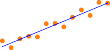
Data set 1
Linear Sinusoidal Piecewise linear Degree-12 polynomial
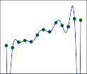
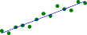
Data set 2
Figure 19.1 Finding hypotheses to fit data. Top row: four plots of best-fit functions from
four different hypothesis spaces trained on data set 1. Bottom row: the same four functions,
but trained on a slightly different data set (sampled from the same f (x) function).Test set
look for a best-fit function for which each h(xi) is close to yi (in a way that we will formalize
in Section 19.4.2).The true measure of a hypothesis is not how it does on the training set, but rather how
well it handles inputs it has not yet seen. We can evaluate that with a second sample of (xi, yi)
pairs called a test set. We say that h generalizes well if it accurately predicts the outputs ofGeneralization the test set.
H
Figure 19.1 shows that the function h that a learning algorithm discovers depends on the
hypothesis space it considers and on the training set it is given. Each of the four plots in
the top row have the same training set of 13 data points in the (x, y) plane. The four plots
in the bottom row have a second set of 13 data points; both sets are representative of the
same unknown function f (x). Each column shows the best-fit hypothesis h from a different
hypothesis space:•
Column 1: Straight lines; functions of the form h(x) = w1x + w0. There is no line that
would be a consistent hypothesis for the data points.•
Column 2: Sinusoidal functions of the form h(x) = w1x + sin(w0x). This choice is not
quite consistent, but fits both data sets very well.•
Column 3: Piecewise-linear functions where each line segment connects the dots from
one data point to the next. These functions are always consistent.12
Column 4: Degree-12 polynomials, h(x) = ∑i=0 wixi. These are consistent: we can
Bias
always get a degree-12 polynomial to perfectly fit 13 distinct points. But just because
the hypothesis is consistent does not mean it is a good guess.One way to analyze hypothesis spaces is by the bias they impose (regardless of the train-
ing data set) and the variance they produce (from one training set to another).By bias we mean (loosely) the tendency of a predictive hypothesis to deviate from the
expected value when averaged over different training sets. Bias often results from restrictionsSection 19.2 Supervised Learning 673
imposed by the hypothesis space. For example, the hypothesis space of linear functions
induces a strong bias: it only allows functions consisting of straight lines. If there are any
patterns in the data other than the overall slope of a line, a linear function will not be ableto represent those patterns. We say that a hypothesis is underfitting when it fails to find a Underfitting
pattern in the data. On the other hand, the piecewise linear function has low bias; the shape
of the function is driven by the data.By variance we mean the amount of change in the hypothesis due to fluctuation in the Variance
training data. The two rows of Figure 19.1 represent data sets that were each sampled from
the same f (x) function. The data sets turned out to be slightly different. For the first three
columns, the small difference in the data set translates into a small difference in the hypothe-
sis. We call that low variance. But the degree-12 polynomials in the fourth column have high
variance: look how different the two functions are at both ends of the x-axis. Clearly, at least
one of these polynomials must be a poor approximation to the true f (x). We say a functionis overfitting the data when it pays too much attention to the particular data set it is trained Overfitting
on, causing it to perform poorly on unseen data.
tradeoff
Often there is a bias–variance tradeoff: a choice between more complex, low-bias hy- Bias–variance
potheses that fit the training data well and simpler, low-variance hypotheses that may gen-
eralize better. Albert Einstein said in 1933, “the supreme goal of all theory is to make the
irreducible basic elements as simple and as few as possible without having to surrender the
adequate representation of a single datum of experience.” In other words, Einstein recom-
mends choosing the simplest hypothesis that matches the data. This principle can be traced
further back to the 14th-century English philosopher William of Ockham.2 His principle that
“plurality [of entities] should not be posited without necessity” is called Ockham’s razorbecause it is used to “shave off” dubious explanations.Defining simplicity is not easy. It seems clear that a polynomial with only two parameters
is simpler than one with thirteen parameters. We will make this intuition more precise in
Section 19.3.4. However, in Chapter 22 we will see that deep neural network models can
often generalize quite well, even though they are very complex—some of them have billions
of parameters. So the number of parameters by itself is not a good measure of a model’s
fitness. Perhaps we should be aiming for “appropriateness,” not “simplicity” in a model
class. We will consider this issue in Section 19.4.1.Which hypothesis is best in Figure 19.1? We can’t be certain. If we knew the data
represented, say, the number of hits to a Web site that grows from day to day, but also cycles
depending on the time of day, then we might favor the sinusoidal function. If we knew the
data was definitely not cyclic but had high noise, that would favor the linear function.In some cases, an analyst is willing to say not just that a hypothesis is possible or im-
possible, but rather how probable it is. Supervised learning can be done by choosing the
hypothesis h∗ that is most probable given the data:|
h∗ = argmax P(h data) .
h∈H
By Bayes’ rule this is equivalent to
|
h∗ = argmax P(data h) P(h) .
h∈H
2 The name is often misspelled as “Occam.”
674 Chapter 19 Learning from Examples
Then we can say that the prior probability P(h) is high for a smooth degree-1 or -2 polynomial
and lower for a degree-12 polynomial with large, sharp spikes. We allow unusual-looking
functions when the data say we really need them, but we discourage them by giving them a
low prior probability.H
Why not let be the class of all computer programs, or all Turing machines? The
problem is that there is a tradeoff between the expressiveness of a hypothesis space and theFor example, fitting
a straight line to data is an easy computation; fitting high-degree polynomials is somewhat
harder; and fitting Turing machines is undecidable. A second reason to prefer simple hypoth-
esis spaces is that presumably we will want to use h after we have learned it, and computing
h(x) when h is a linear function is guaranteed to be fast, while computing an arbitrary Turing
machine program is not even guaranteed to terminate.For these reasons, most work on learning has focused on simple representations. In recent
years there has been great interest in deep learning (Chapter 22), where representations are
not simple but where the h(x) computation still takes only a bounded number of steps to
compute with appropriate hardware.We will see that the expressiveness–complexity tradeoff is not simple: it is often the case,
as we saw with first-order logic in Chapter 8, that an expressive language makes it possible
for a simple hypothesis to fit the data, whereas restricting the expressiveness of the language
means that any consistent hypothesis must be complex.Example problem: Restaurant waiting
We will describe a sample supervised learning problem in detail: the problem of deciding
whether to wait for a table at a restaurant. This problem will be used throughout the chapter
to demonstrate different model classes. For this problem the output, y, is a Boolean variable
that we will call WillWait; it is true for examples where we do wait for a table. The input, x,
is a vector of ten attribute values, each of which has discrete values:Alternate: whether there is a suitable alternative restaurant nearby.
Bar: whether the restaurant has a comfortable bar area to wait in.
Fri/Sat: true on Fridays and Saturdays.
Hungry: whether we are hungry right now.
Patrons: how many people are in the restaurant (values are None, Some, and Full).
Price: the restaurant’s price range ($, $$, $$$).
Raining: whether it is raining outside.
Reservation: whether we made a reservation.
Type: the kind of restaurant (French, Italian, Thai, or burger).
WaitEstimate: host’s wait estimate: 0–10, 10–30, 30–60, or >60 minutes.
× ×
A set of 12 examples, taken from the experience of one of us (SR), is shown in Figure 19.2.
Note how skimpy these data are: there are 26 32 42 = 9, 216 possible combinations of
values for the input attributes, but we are given the correct output for only 12 of them; each of
the other 9,204 could be either true or false; we don’t know. This is the essence of induction:
we need to make our best guess at these missing 9,204 output values, given only the evidence
of the 12 examples.Section 19.3 Learning Decision Trees 675
Example
Alt
Bar
Fri
Hun
Input Attributes
Pat Price Rain
Res
Type
Est
Output
WillWait
x1
Yes
No
No
Yes
Some
$$$ No
Yes
French
0–10
y1 = Yes
x2
Yes
No
No
Yes
Full
$ No
No
Thai
30–60
y2 = No
x3
No
Yes
No
No
Some
$ No
No
Burger
0–10
y3 = Yes
x4
Yes
No
Yes
Yes
Full
$ Yes
No
Thai
10–30
y4 = Yes
x5
Yes
No
Yes
No
Full
$$$ No
Yes
French
>60
y5 = No
x6
No
Yes
No
Yes
Some
$$ Yes
Yes
Italian
0–10
y6 = Yes
x7
No
Yes
No
No
None
$ Yes
No
Burger
0–10
y7 = No
x8
No
No
No
Yes
Some
$$ Yes
Yes
Thai
0–10
y8 = Yes
x9
No
Yes
Yes
No
Full
$ Yes
No
Burger
>60
y9 = No
x10
Yes
Yes
Yes
Yes
Full
$$$ No
Yes
Italian
10–30
y10 = No
x11
No
No
No
No
None
$ No
No
Thai
0–10
y11 = No
x12
Yes
Yes
Yes
Yes
Full
$ No
No
Burger
30–60
y12 = Yes
Figure 19.2 Examples for the restaurant domain.
Learning Decision Trees
A decision tree is a representation of a function that maps a vector of attribute values to Decision tree
a single output value—a “decision.” A decision tree reaches its decision by performing a
sequence of tests, starting at the root and following the appropriate branch until a leaf is
reached. Each internal node in the tree corresponds to a test of the value of one of the input
attributes, the branches from the node are labeled with the possible values of the attribute,
and the leaf nodes specify what value is to be returned by the function.In general, the input and output values can be discrete or continuous, but for now we will
consider only inputs consisting of discrete values and outputs that are either true (a positive Positive
example) or false (a negative example). We call this Boolean classification. We will use j Negative
to index the examples (x j is the input vector for the jth example and y j is the output), and x j,ifor the ith attribute of the jth example.
The tree representing the decision function that SR uses for the restaurant problem is
shown in Figure 19.3. Following the branches, we see that an example with Patrons = Full
and WaitEstimate = 0–10 will be classified as positive (i.e., yes, we will wait for a table).Expressiveness of decision trees
A Boolean decision tree is equivalent to a logical statement of the form:
Output ⇔ (Path1 ∨Path2 ∨···) ,
∧ ∧ · · ·
where each Pathi is a conjunction of the form (Am = vx An = vy ) of attribute-value
tests corresponding to a path from the root to a true leaf. Thus, the whole expression is
in disjunctive normal form, which means that any function in propositional logic can be
expressed as a decision tree.For many problems, the decision tree format yields a nice, concise, understandable result.
Indeed, many “How To” manuals (e.g., for car repair) are written as decision trees. But some
functions cannot be represented concisely. For example, the majority function, which returns676 Chapter 19 Learning from Examples
true if and only if more than half of the inputs are true, requires an exponentially large decision
tree, as does the parity function, which returns true if and only if an even number of input
attributes are true. With real-valued attributes, the function y > A1 + A2 is hard to represent
with a decision tree because the decision boundary is a diagonal line, and all decision tree
tests divide the space up into rectangular, axis-aligned boxes. We would have to stack a lot
of boxes to closely approximate the diagonal line. In other words, decision trees are good for
some kinds of functions and bad for others.Is there any kind of representation that is efficient for all kinds of functions? Unfortu-
nately, the answer is no—there are just too many functions to be able to represent them all
with a small number of bits. Even just considering Boolean functions with n Boolean at-
tributes, the truth table will have 2n rows, and each row can output true or false, so there are≈
22n different functions. With 20 attributes there are 21,048,576 10300,000 functions, so if we
limit ourselves to a million-bit representation, we can’t represent all these functions.
Learning decision trees from examples
We want to find a tree that is consistent with the examples in Figure 19.2 and is as small as
possible. Unfortunately, it is intractable to find a guaranteed smallest consistent tree. But
with some simple heuristics, we can efficiently find one that is close to the smallest. The
LEARN-DECISION-TREE algorithm adopts a greedy divide-and-conquer strategy: always
test the most important attribute first, then recursively solve the smaller subproblems that are
defined by the possible results of the test. By “most important attribute,” we mean the one
that makes the most difference to the classification of an example. That way, we hope to get
to the correct classification with a small number of tests, meaning that all paths in the tree
will be short and the tree as a whole will be shallow.Figure 19.4(a) shows that Type is a poor attribute, because it leaves us with four possible
None
Some
Full
>60
30-60
10-30
0-10
No
Yes
No
Yes
No
Yes No
Yes
No
Yes
Fri/Sat?
Reservation?
Yes
Patrons?
Yes
No
Alternate?
Yes
Yes
Hungry?
Alternate?
No
WaitEstimate?
No
No
Yes
Yes
No
Raining?
Yes
No
Yes
Yes
No
Yes
Bar?
Figure 19.3 A decision tree for deciding whether to wait for a table.
Section 19.3 Learning Decision Trees 677
1 3 4 6 8 12
2 5 7 9 10 11
Patrons?
None
Some
1 3 6 8
7 11
Full
4 12
2 5 9 10
1
3
4
6
8
12
2
5
7
9
10
11
Type?
No
Yes
4
12
2
10
No
Yes
5 9
Hungry?
French
1
5
Italian Thai
6 4 8
10 2 11
Burger
3 12
7 9
(a) (b)
Figure 19.4 Splitting the examples by testing on attributes. At each node we show the
positive (light boxes) and negative (dark boxes) examples remaining. (a) Splitting on Typebrings us no nearer to distinguishing between positive and negative examples. (b) Splitting
on Patrons does a good job of separating positive and negative examples. After splitting on
Patrons, Hungry is a fairly good second test.outcomes, each of which has the same number of positive as negative examples. On the other
hand, in (b) we see that Patrons is a fairly important attribute, because if the value is None or
Some, then we are left with example sets for which we can answer definitively (No and Yes,
respectively). If the value is Full, we are left with a mixed set of examples. There are four
cases to consider for these recursive subproblems:If the remaining examples are all positive (or all negative), then we are done: we can
answer Yes or No. Figure 19.4(b) shows examples of this happening in the None and
Some branches.If there are some positive and some negative examples, then choose the best attribute to
split them. Figure 19.4(b) shows Hungry being used to split the remaining examples.If there are no examples left, it means that no example has been observed for this com-
bination of attribute values, and we return the most common output value from the set
of examples that were used in constructing the node’s parent.If there are no attributes left, but both positive and negative examples, it means that
these examples have exactly the same description, but different classifications. This can
happen because there is an error or noise in the data; because the domain is nondeter- Noise
ministic; or because we can’t observe an attribute that would distinguish the examples.
The best we can do is return the most common output value of the remaining examples.The LEARN-DECISION-TREE algorithm is shown in Figure 19.5. Note that the set of exam-
ples is an input to the algorithm, but nowhere do the examples appear in the tree returned by
the algorithm. A tree consists of tests on attributes in the interior nodes, values of attributes
on the branches, and output values on the leaf nodes. The details of the IMPORTANCE func-
tion are given in Section 19.3.3. The output of the learning algorithm on our sample training
set is shown in Figure 19.6. The tree is clearly different from the original tree shown in Fig-678 Chapter 19 Learning from Examples
function LEARN-DECISION-TREE(examples, attributes, parent examples) returns a tree
if examples is empty then return PLURALITY-VALUE(parent examples)
else if all examples have the same classification then return the classification
else if attributes is empty then return PLURALITY-VALUE(examples)
else
←
← ∈
A argmaxa attributes IMPORTANCE(a, examples)
tree a new decision tree with root test Afor each value v of A do
←{ ∈ }
exs e : e examples and e.A = v
← −
subtree LEARN-DECISION-TREE(exs, attributes A, examples)
add a branch to tree with label (A = v) and subtree subtreereturn tree
Figure 19.5 The decision tree learning algorithm. The function IMPORTANCE is described
in Section 19.3.3. The function PLURALITY-VALUE selects the most common output value
among a set of examples, breaking ties randomly.None
Some
Full
Yes
Patrons?
No
No
Yes
Type?
No
Hungry?
French
Italian
Thai
Burger
Yes
No
Yes
No
Yes
Yes
No
Fri/Sat?
Figure 19.6 The decision tree induced from the 12-example training set.
ure 19.3. One might conclude that the learning algorithm is not doing a very good job of
learning the correct function. This would be the wrong conclusion to draw, however. The
learning algorithm looks at the examples, not at the correct function, and in fact, its hypothe-
sis (see Figure 19.6) not only is consistent with all the examples, but is considerably simpler
than the original tree! With slightly different examples the tree might be very different, but
the function it represents would be similar.The learning algorithm has no reason to include tests for Raining and Reservation, be-
cause it can classify all the examples without them. It has also detected an interesting and
previously unsuspected pattern: SR will wait for Thai food on weekends. It is also bound to
make some mistakes for cases where it has seen no examples. For example, it has never seenSection 19.3 Learning Decision Trees 679
1
Proportion correct on test set
0.9
0.8
0.7
0.6
0.5
0.4
0 20 40 60 80 100
Training set size
Figure 19.7 A learning curve for the decision tree learning algorithm on 100 randomly gen-
erated examples in the restaurant domain. Each data point is the average of 20 trials.a case where the wait is 0–10 minutes but the restaurant is full. In that case it says not to wait
when Hungry is false, but SR would certainly wait. With more training examples the learning
program could correct this mistake.We can evaluate the performance of a learning algorithm with a learning curve, as shown Learning curve
in Figure 19.7. For this figure we have 100 examples at our disposal, which we split randomly
into a training set and a test set. We learn a hypothesis h with the training set and measure its
accuracy with the test set. We can do this starting with a training set of size 1 and increasing
one at a time up to size 99. For each size, we actually repeat the process of randomly splitting
into training and test sets 20 times, and average the results of the 20 trials. The curve shows
that as the training set size grows, the accuracy increases. (For this reason, learning curvesare also called happy graphs.) In this graph we reach 95% accuracy, and it looks as if the Happy graphs
curve might continue to increase if we had more data.
Choosing attribute tests
The decision tree learning algorithm chooses the attribute with the highest IMPORTANCE. We
will now show how to measure importance, using the notion of information gain, which is de-fined in terms of entropy, which is the fundamental quantity in information theory (Shannon Entropy
and Weaver, 1949).
Entropy is a measure of the uncertainty of a random variable; the more information, the
less entropy. A random variable with only one possible value—a coin that always comes
up heads—has no uncertainty and thus its entropy is defined as zero. A fair coin is equally
likely to come up heads or tails when flipped, and we will soon show that this counts as “1
bit” of entropy. The roll of a fair four-sided die has 2 bits of entropy, because there are 22
equally probable choices. Now consider an unfair coin that comes up heads 99% of the time.
Intuitively, this coin has less uncertainty than the fair coin—if we guess heads we’ll be wrong
only 1% of the time—so we would like it to have an entropy measure that is close to zero,
but positive. In general, the entropy of a random variable V with values vk having probability680 Chapter 19 Learning from Examples
P(vk) is defined as
2 2
Entropy: H(V ) = ∑P(vk) log 1 = − ∑P(vk) log P(vk) .
k P(vk) k
We can check that the entropy of a fair coin flip is indeed 1 bit:
H(Fair) = −(0.5 log2 0.5 + 0.5 log2 0.5) = 1 .
And of a four-sided die is 2 bits:
H(Die4) = −(0.25 log2 0.25 + 0.25 log2 0.25 + 0.25 log2 0.25 + 0.25 log2 0.25) = 2
For the loaded coin with 99% heads, we get
H(Loaded) = −(0.99 log2 0.99 + 0.01 log2 0.01) ≈ 0.08 bits.
It will help to define B(q) as the entropy of a Boolean random variable that is true with
probability q:B(q) = −(q log2 q + (1 −q) log2(1 −q)) .
≈
Thus, H(Loaded) = B(0.99) 0.08. Now let’s get back to decision tree learning. If a training
set contains p positive examples and n negative examples, then the entropy of the output
variable on the whole set isH(Output) = B p .
p + n
The restaurant training set in Figure 19.2 has p = n = 6, so the corresponding entropy is
B(0.5) or exactly 1 bit. The result of a test on an attribute A will give us some information,
thus reducing the overall entropy by some amount. We can measure this reduction by looking
at the entropy remaining after the attribute test.An attribute A with d distinct values divides the training set E into subsets E1, . . . , Ed.
Each subset Ek has pk positive examples and nk negative examples, so if we go along that
branch, we will need an additional B(pk/(pk + nk)) bits of information to answer the question.
A randomly chosen example from the training set has the kth value for the attribute (i.e., is
in Ek with probability (pk + nk)/(p + n)), so the expected entropy remaining after testing
attribute A isd
Remainder(A) = ∑ pk +nk B( pk ) .
k=1
p+n
pk+nk
Information gain
The information gain from the attribute test on A is the expected reduction in entropy:
+
Gain(A) = B( ppn ) −Remainder(A) .
In fact Gain(A) is just what we need to implement the IMPORTANCE function. Returning to
the attributes considered in Figure 19.4, we have12
2
12
4
12
6
Gain(Patrons) = 1 − 2 B( 0 ) + 4 B( 4 ) + 6 B( 2 ) ≈ 0.541 bits,
12
2
12
2
12
4
12
4
Gain(Type) = 1 − 2 B( 1 ) + 2 B( 1 ) + 4 B( 2 ) + 4 B( 2 ) = 0 bits,
confirming our intuition that Patrons is a better attribute to split on first. In fact, Patronshas the maximum information gain of any of the attributes and thus would be chosen by the
decision tree learning algorithm as the root.Section 19.3 Learning Decision Trees 681
Generalization and overfitting
We want our learning algorithms to find a hypothesis that fits the training data, but more
importantly, we want it to generalize well for previously unseen data. In Figure 19.1 we saw
that a high-degree polynomial can fit all the data, but has wild swings that are not warranted
by the data: it fits but can overfit. Overfitting becomes more likely as the number of attributes
grows, and less likely as we increase the number of training examples. Larger hypothesis
spaces (e.g., decision trees with more nodes or polynomials with high degree) have more
capacity both to fit and to overfit; some model classes are more prone to overfitting than
others.pruning
For decision trees, a technique called decision tree pruning combats overfitting. Pruning Decision tree
works by eliminating nodes that are not clearly relevant. We start with a full tree, as gener-
ated by LEARN-DECISION-TREE. We then look at a test node that has only leaf nodes as
descendants. If the test appears to be irrelevant—detecting only noise in the data—then we
eliminate the test, replacing it with a leaf node. We repeat this process, considering each test
with only leaf descendants, until each one has either been pruned or accepted as is.The question is, how do we detect that a node is testing an irrelevant attribute? Suppose
we are at a node consisting of p positive and n negative examples. If the attribute is irrel-
evant, we would expect that it would split the examples into subsets such that each subset
has roughly the same proportion of positive examples as the whole set, p/(p + n), and so the
information gain will be close to zero.3 Thus, a low information gain is a good clue that the
attribute is irrelevant. Now the question is, how large a gain should we require in order to
split on a particular attribute?We can answer this question by using a statistical significance test. Such a test begins Significance test
by assuming that there is no underlying pattern (the so-called null hypothesis). Then the ac- Null hypothesis
tual data are analyzed to calculate the extent to which they deviate from a perfect absence ofpattern. If the degree of deviation is statistically unlikely (usually taken to mean a 5% prob-
ability or less), then that is considered to be good evidence for the presence of a significant
pattern in the data. The probabilities are calculated from standard distributions of the amount
of deviation one would expect to see in random sampling.In this case, the null hypothesis is that the attribute is irrelevant and, hence, that the infor-
mation gain for an infinitely large sample would be zero. We need to calculate the probability
that, under the null hypothesis, a sample of size v = n + p would exhibit the observed devi-
ation from the expected distribution of positive and negative examples. We can measure the
deviation by comparing the actual numbers of positive and negative examples in each subset,
pk and nk, with the expected numbers, pˆk and nˆk, assuming true irrelevance:k ×
pˆ = p pk + nk
p + n
nˆ = n pk + nk .
k ×
p + n
—
A convenient measure of the total deviation is given by
d
∆ = ∑
k=1
(pk pˆk)2
—
pˆk +
(nk nˆk)2
nˆk .Under the null hypothesis, the value of ∆ is distributed according to the χ2 (chi-squared)
3 The gain will be strictly positive except for the unlikely case where all the proportions are exactly the same.
(See Exercise 19.NNGA.)682 Chapter 19 Learning from Examples
—
distribution with d 1 degrees of freedom. We can use a χ2 statistics function to see if a
particular ∆ value confirms or rejects the null hypothesis. For example, consider the restaurant
Type attribute, with four values and thus three degrees of freedom. A value of ∆= 7.82 ormore would reject the null hypothesis at the 5% level (and a value of ∆= 11.35 or more
would reject at the 1% level). Values below that lead to accepting the hypothesis that the
attribute is irrelevant, and thus the associated branch of the tree should be pruned away. This
χ2 pruning
Early stopping
Split point
is known as χ2 pruning.
With pruning, noise in the examples can be tolerated. Errors in the example’s label (e.g.,
an example (x, Yes) that should be (x, No)) give a linear increase in prediction error, whereas
errors in the descriptions of examples (e.g., Price =$ when it was actually Price =$$) have
an asymptotic effect that gets worse as the tree shrinks down to smaller sets. Pruned trees
perform significantly better than unpruned trees when the data contain a large amount of
noise. Also, the pruned trees are often much smaller and hence easier to understand and more
efficient to execute.One final warning: You might think that χ2 pruning and information gain look similar,
so why not combine them using an approach called early stopping—have the decision tree
algorithm stop generating nodes when there is no good attribute to split on, rather than going
to all the trouble of generating nodes and then pruning them away. The problem with early
stopping is that it stops us from recognizing situations where there is no one good attribute,
but there are combinations of attributes that are informative. For example, consider the XOR
function of two binary attributes. If there are roughly equal numbers of examples for all
four combinations of input values, then neither attribute will be informative, yet the correct
thing to do is to split on one of the attributes (it doesn’t matter which one), and then at the
second level we will get splits that are very informative. Early stopping would miss this, but
generate-and-then-prune handles it correctly.Broadening the applicability of decision trees
Decision trees can be made more widely useful by handling the following complications:
•
•
Missing data: In many domains, not all the attribute values will be known for every
example. The values might have gone unrecorded, or they might be too expensive to
obtain. This gives rise to two problems: First, given a complete decision tree, how
should one classify an example that is missing one of the test attributes? Second, how
should one modify the information-gain formula when some examples have unknown
values for the attribute? These questions are addressed in Exercise 19.MISS.
Continuous and multivalued input attributes: For continuous attributes like Height,
Weight, or Time, it may be that every example has a different attribute value. The
information gain measure would give its highest score to such an attribute, giving us ashallow tree with this attribute at the root, and single-example subtrees for each possible
value below it. But that doesn’t help when we get a new example to classify with an
attribute value that we haven’t seen before.A better way to deal with continuous values is a split point test—an inequality test
on the value of an attribute. For example, at a given node in the tree, it might be the
case that testing on Weight > 160 gives the most information. Efficient methods exist
for finding good split points: start by sorting the values of the attribute, and then con-
sider only split points that are between two examples in sorted order that have differentSection 19.4 Model Selection and Optimization 683
classifications, while keeping track of the running totals of positive and negative exam-
ples on each side of the split point. Splitting is the most expensive part of real-world
decision tree learning applications.For attributes that are not continuous and do not have a meaningful ordering, but
have a large number of possible values (e.g., Zipcode or CreditCardNumber), a measure
called the information gain ratio (see Exercise 19.GAIN) can be used to avoid splitting
into lots of single-example subtrees. Another useful approach is to allow an equalityof the form A = vk. For example, the test Zipcode = 10002 could be used to pick out
a large group of people in this zip code in New York City, and to lump everyone else
into the “other” subtree.•
Continuous-valued output attribute: If we are trying to predict a numerical output
value, such as the price of an apartment, then we need a regression tree rather than a Regression tree
classification tree. A regression tree has at each leaf a linear function of some subset of
numerical attributes, rather than a single output value. For example, the branch for two-
bedroom apartments might end with a linear function of square footage and number
of bathrooms. The learning algorithm must decide when to stop splitting and beginapplying linear regression (see Section 19.6) over the attributes. The name CART, CART
standing for Classification And Regression Trees, is used to cover both classes.
A decision tree learning system for real-world applications must be able to handle all of
these problems. Handling continuous-valued variables is especially important, because both
physical and financial processes provide numerical data. Several commercial packages have
been built that meet these criteria, and they have been used to develop thousands of fielded
systems. In many areas of industry and commerce, decision trees are the first method tried
when a classification method is to be extracted from a data set.Decision trees have a lot going for them: ease of understanding, scalability to large data
sets, and versatility in handling discrete and continuous inputs as well as classification and
regression. However, they can have suboptimal accuracy (largely due to the greedy search),
and if trees are very deep, then getting a prediction for a new example can be expensive in runtime. Decision trees are also unstable in that adding just one new example can change the Unstable
test at the root, which changes the entire tree. In Section 19.8.2 we will see that the randomcan fix some of these issues.
Model Selection and Optimization
Our goal in machine learning is to select a hypothesis that will optimally fit future examples.
To make that precise we need to define “future example” and “optimal fit.”First we will make the assumption that the future examples will be like the past. We call
this the stationarity assumption; without it, all bets are off. We assume that each example Ej Stationarity
has the same prior probability distribution:
P(Ej) = P(Ej+1) = P(Ej+2) = ,
and is independent of the previous examples:
P(Ej) = P(Ej|Ej−1, Ej−2, ) .
Examples that satisfy these equations are independent and identically distributed or i.i.d.. I.i.d.
684 Chapter 19 Learning from Examples
Error rate
Hyperparameters
Validation set
K-fold
cross-validation
LOOCV
Model selection
The next step is to define “optimal fit.” For now, we will say that the optimal fit is the
hypothesis that minimizes the error rate: the proportion of times that h(x) = y for an (x, y)
example. (Later we will expand on this to allow different errors to have different costs, in
effect giving partial credit for answers that are “almost” correct.) We can estimate the error
rate of a hypothesis by giving it a test: measure its performance on a test set of examples. It
would be cheating for a hypothesis (or a student) to peek at the test answers before taking the
test. The simplest way to ensure this doesn’t happen is to split the examples you have into
two sets: a training set to create the hypothesis, and a test set to evaluate it./
If we are only going to create one hypothesis, then this approach is sufficient. But often
we will end up creating multiple hypotheses: we might want to compare two completely
different machine learning models, or we might want to adjust the various “knobs” within
one model. For example, we could try different thresholds for χ2 pruning of decision trees,
or different degrees for polynomials. We call these “knobs” hyperparameters—parameters
of the model class, not of the individual model.Suppose a researcher generates a hypotheses for one setting of the χ2 pruning hyperpa-
rameter, measures the error rates on the test set, and then tries different hyperparameters. No
individual hypothesis has peeked at the test set data, but the overall process did, through the
researcher.The way to avoid this is to really hold out the test set—lock it away until you are
completely done with training, experimenting, hyperparameter-tuning, re-training, etc. That
means you need three data sets:A training set to train candidate models.
A validation set, also known as a development set or dev set, to evaluate the candidate
models and choose the best one.A test set to do a final unbiased evaluation of the best model.
What if we don’t have enough data to make all three of these data sets? We can squeeze more
out of the data using a technique called k-fold cross-validation. The idea is that each example
serves double duty—as training data and validation data—but not at the same time. First we
split the data into k equal subsets. We then perform k rounds of learning; on each round 1/kof the data are held out as a validation set and the remaining examples are used as the training
set. The average test set score of the k rounds should then be a better estimate than a single
score. Popular values for k are 5 and 10—enough to give an estimate that is statistically likely
to be accurate, at a cost of 5 to 10 times longer computation time. The extreme is k = n, also
known as leave-one-out cross-validation or LOOCV. Even with cross-validation, we still
need a separate test set.In Figure 19.1 (page 672) we saw a linear function underfit the data set, and a high-
degree polynomial overfit the data. We can think of the task of finding a good hypothesis
as two subtasks: model selection4 chooses a good hypothesis space, and optimization (alsoOptimization called training) finds the best hypothesis within that space.
Part of model selection is qualitative and subjective: we might select polynomials rather
4 Although the name “model selection” is in common use, a better name would have been “model class selec-
tion” or “hypothesis space selection.” The word “model” has been used in the literature to refer to three different
levels of specificity: a broad hypothesis space (like “polynomials”), a hypothesis space with hyperparameters
filled in (like “degree-2 polynomials”), and a specific hypothesis with all parameters filled in (like 5x2 + 3x— 2).Section 19.4 Model Selection and Optimization 685
function MODEL-SELECTION(Learner, examples, k) returns a (hypothesis, error rate) pair
←
←
←
err an array, indexed by size, storing validation-set error rates
training set, test set a partition of examples into two sets
for size = 1 to ∞ doerr[size] Cross-Validation(Learner, size, training set, k)
if err is starting to increase significantly then
←
←
best size the value of size with minimum err[size]
h Learner(best size, training set)return h, Error-Rate(h, test set)
function CROSS-VALIDATION(Learner, size, examples, k) returns error rate
←
←
N the number of examples
errs 0for i = 1 to k do
← —
← — × ×
validation set examples[(i 1) N/k:i N/k]
training set examples validation set←
h Learner(size, training set)
←
errs errs + ERROR-RATE(h, validation set)
return errs / k // average error rate on validation sets, across k-fold cross-validation
Figure 19.8 An algorithm to select the model that has the lowest validation error. It builds
models of increasing complexity, and choosing the one with best empirical error rate, err,
on the validation data set. Learner(size, examples) returns a hypothesis whose complexity
is set by the parameter size, and which is trained on examples. In CROSS-VALIDATION,
each iteration of the for loop selects a different slice of the examples as the validation set,
and keeps the other examples as the training set. It then returns the average validation set
error over all the folds. Once we have determined which value of the size parameter is best,
MODEL-SELECTION returns the model (i.e., learner/hypothesis) of that size, trained on all
the training examples, along with its error rate on the held-out test examples.than decision trees based on something that we know about the problem. And part is quan-
titative and empirical: within the class of polynomials, we might select Degree = 2, because
that value performs best on the validation data set.Model selection
Figure 19.8 describes a simple MODEL-SELECTION algorithm. It takes as argument a learn-
ing algorithm, Learner (for example, it could be LEARN-DECISION-TREE). Learner takes
one hyperparameter, which is named size in the figure. For decision trees it could be the
number of nodes in the tree; for polynomials size would be Degree. MODEL-SELECTION
starts with the smallest value of size, yielding a simple model (which will probably underfit
the data) and iterates through larger values of size, considering more complex models. In
the end MODEL-SELECTION selects the model that has the lowest average error rate on the
held-out validation data.In Figure 19.9 we see two typical patterns that occur in model selection. In both (a)
and (b) the training set error decreases monotonically (with slight random fluctuation) as we686 Chapter 19 Learning from Examples
Validation Set Error
Training Set Error60 60
50 50
Error rate (%)
Error rate (%)
40 40
30 30
20 20
10 10
0 0
1 2 3 4 5 6 7 8 9 10
Tree size in nodes
Validation Set Error
Training Set Error10 100 1000
Thousands of parameters
(a) (b)
Figure 19.9 Error rates on training data (lower, green line) and validation data (upper, orange
line) for models of different complexity on two different problems. MODEL-SELECTION
picks the hyperparameter value with the lowest validation-set error. In (a) the model class is
decision trees and the hyperparameter is the number of nodes. The data is from a version of
the restaurant problem. The optimal size is 7. In (b) the model class is convolutional neural
networks (see Section 22.3) and the hyperparameter is the number of regular parameters in
the network. The data is the MNIST data set of images of digits; the task is to identify each
digit. The optimal number of parameters is 1,000,000 (note the log scale).Interpolated
increase the complexity of the model. Complexity is measured by the number of decision tree
nodes in (a) and by the number of neural network parameters (wi) in (b). For many model
classes, the training set error reaches zero as the complexity increases.The two cases differ markedly in validation set error. In (a) we see a U-shaped validation-
error curve: error decreases for a while as model complexity increases, but then we reach a
point where the model begins to overfit, and validation error rises. MODEL-SELECTION
picks the value at the bottom of the U-shaped validation-error curve: in this case a tree with
size 7. This is the spot that best balances underfitting and overfitting. In (b) we see an initial
U-shaped curve just as in (a) but then the validation error starts to decrease again; the lowest
validation error rate is the final point in the plot, with 1,000,000 parameters.Why are some validation-error curves like (a) and some like (b)? It comes down to how
the different model classes make use of excess capacity, and how well that matches up with
the problem at hand. As we add capacity to a model class, we often reach the point where
all the training examples can be represented perfectly within the model. For example, given
a training set with n distinct examples, there is always a decision tree with n leaf nodes that
can represent all the examples.We say that a model that exactly fits all the training data has interpolated the data.5
Model classes typically start to overfit as the capacity approaches the point of interpolation.
That seems to be because most of the model’s capacity is concentrated on the training ex-
amples, and the capacity that remains is allocated rather randomly in a way that is not rep-
resentative of the patterns in the validation data set. Some model classes never recover from5 Some authors say the model has “memorized” the data.
Section 19.4 Model Selection and Optimization 687
this overfitting, as with the decision trees in (a). But for other model classes, adding capacity
means that there are more candidate functions, and some of them are naturally well-suited to
the patterns of data that are in the true function f (x). The higher the capacity, the more of
these suitable representations there are, and the more likely that the optimization mechanism
will be able to land on one.Deep neural networks (Chapter 22), kernel machines (Section 19.7.5), random forests
(Section 19.8.2), and boosted ensembles (Section 19.8.4) all have the property that their vali-
dation set error tends to decrease as capacity increases, as in Figure 19.9(b).We could extend the model selection algorithm in various ways: we could compare dis-
parate model classes, by calling MODEL-SELECTION with DECISION-TREE-LEARNER as
an argument and then with POLYNOMIAL-LEARNER, and seeing which does better. We could
allow multiple hyperparameters, which means we would need a more complex optimization
algorithm, such as a grid search (see Section 19.9.3) rather than a linear search.From error rates to loss
So far, we have been trying to minimize error rate. This is clearly better than maximizing error
rate, but it is not the full story. Consider the problem of classifying email messages as spam
or non-spam. It is worse to classify non-spam as spam (and thus potentially miss an important
message) than to classify spam as non-spam (and thus suffer a few seconds of annoyance).
So a classifier with a 1% error rate, where almost all the errors were classifying spam as non-
spam, would be better than a classifier with only a 0.5% error rate, if most of those errors were
classifying non-spam as spam. We saw in Chapter 15 that decision makers should maximize
expected utility, and utility is what learners should maximize as well. However, in machinelearning it is traditional to express this as a negative: to minimize a loss function rather than Loss function
maximize a utility function. The loss function L(x, y, yˆ) is defined as the amount of utility lost
by predicting h(x) = yˆ when the correct answer is f (x) = y:L(x, y, yˆ) = Utility(result of using y given an input x)
— Utility(result of using yˆ given an input x)
This is the most general formulation of the loss function. Often a simplified version is used,
L(y, yˆ), that is independent of x. We will use the simplified version for the rest of this chapter,
which means we can’t say that it is worse to misclassify a letter from Mom than it is to
misclassify a letter from our annoying cousin, but we can say that it is 10 times worse to
classify non-spam as spam than vice versa:L(spam, nospam) = 1, L(nospam, spam) = 10 .
Note that L(y, y) is always zero; by definition there is no loss when you guess exactly right.
For functions with discrete outputs, we can enumerate a loss value for each possible mis-
classification, but we can’t enumerate all the possibilities for real-valued data. If f (x) is
137.035999, we would be fairly happy with h(x) = 137.036, but just how happy should we
be? In general, small errors are better than large ones; two functions that implement that idea
are the absolute value of the difference (called the L1 loss), and the square of the difference
(called the L2 loss; think “2” for square). For discrete-valued outputs, if we are content with
the idea of minimizing error rate, we can use the L0/1 loss function, which has a loss of 1 for
an incorrect answer:688 Chapter 19 Learning from Examples
Absolute-value loss: L1(y, yˆ) = |y— yˆ| 2
Squared-error loss: L2(y, yˆ) = (y— yˆ)
0/1 loss: L0/1(y, yˆ) = 0 if y = yˆ, else 1
Theoretically, the learning agent maximizes its expected utility by choosing the hypothesis
that minimizes expected loss over all input–output pairs it will see. To compute this expec-
tation we need to define a prior probability distribution P(X,Y ) over examples. Let E beGeneralization loss the set of all possible input–output examples. Then the expected generalization loss for a
hypothesis h (with respect to loss function L) isGenLossL(h) = ∑
(x,y)∈E
L(y, h(x)) P(x, y) ,
Empirical loss
and the best hypothesis, h∗, is the one with the minimum expected generalization loss:
h∗ = argmin GenLossL(h) .
h∈H
Because P(x, y) is not known in most cases, the learning agent can only estimate generaliza-
tion loss with empirical loss on a set of examples E of size N:EmpLossL,E (h) = ∑
(x,y)∈E
L(y, h(x)) 1 .
N
Realizable
Noise
Small-scale learning
Large-scale learning
The estimated best hypothesis hˆ∗ is then the one with minimum empirical loss:
hˆ∗ = argmin EmpLossL,E (h) .
h∈H
There are four reasons why hˆ∗ may differ from the true function, f : unrealizability, variance,
noise, and computational complexity.H
H
H
First, we say that a learning problem is realizable if the hypothesis space actually
contains the true function f . If is the set of linear functions, and the true function fis a quadratic function, then no amount of data will recover the true f . Second, variancemeans that a learning algorithm will in general return different hypotheses for different sets
of examples. If the problem is realizable, then variance decreases towards zero as the number
of training examples increases. Third, f may be nondeterministic or noisy—it may return
different values of f (x) for the same x. By definition, noise cannot be predicted (it can only
be characterized). And finally, when is a complicated function in a large hypothesis space,
it can be computationally intractable to systematically search all possibilities; in that case,
a search can explore part of the space and return a reasonably good hypothesis, but can’t
always guarantee the best one.Traditional methods in statistics and the early years of machine learning concentrated on
small-scale learning, where the number of training examples ranged from dozens to the low
thousands. Here the generalization loss mostly comes from the approximation error of not
having the true f in the hypothesis space, and from the estimation error of not having enough
training examples to limit variance.In recent years there has been more emphasis on large-scale learning, with millions of
examples. Here the generalization loss may be dominated by limits of computation: there are
enough data and a rich enough model that we could find an h that is very close to the true f ,
but the computation to find it is complex, so we settle for an approximation.Section 19.4 Model Selection and Optimization 689
Regularization
In Section 19.4.1, we saw how to do model selection with cross-validation. An alternative
approach is to search for a hypothesis that directly minimizes the weighted sum of empirical
loss and the complexity of the hypothesis, which we will call the total cost:Cost(h) = EmpLoss(h) + λ Complexity(h)
hˆ∗ = argmin Cost(h) .h∈H
Here λ is a hyperparameter, a positive number that serves as a conversion rate between loss
and hypothesis complexity. If λ is chosen well, it nicely balances the empirical loss of a
simple function against a complicated function’s tendency to overfit.This process of explicitly penalizing complex hypotheses is called regularization: we’re Regularization
looking for functions that are more regular. Note that we are now making two choices: the
loss function (L1 or L2), and the complexity measure, which is called a regularization func-function
tion. The choice of regularization function depends on the hypothesis space. For example, Regularization
for polynomials, a good regularization function is the sum of the squares of the coefficients—
keeping the sum small would guide us away from the wiggly degree-12 polynomial in Fig-
ure 19.1. We will show an example of this type of regularization in Section 19.6.3.Another way to simplify models is to reduce the dimensions that the models work with. A
process of feature selection can be performed to discard attributes that appear to be irrelevant. Feature selection
χ2 pruning is a kind of feature selection.
It is in fact possible to have the empirical loss and the complexity measured on the same
scale, without the conversion factor λ: they can both be measured in bits. First encode
the hypothesis as a Turing machine program, and count the number of bits. Then count
the number of bits required to encode the data, where a correctly predicted example costs
zero bits and the cost of an incorrectly predicted example depends on how large the error is.description length
The minimum description length or MDL hypothesis minimizes the total number of bits Minimum
required. This works well in the limit, but for smaller problems the choice of encoding for
the program—how best to encode a decision tree as a bit string—affects the outcome. In
Chapter 21 (page 775), we describe a probabilistic interpretation of the MDL approach.Hyperparameter tuning
In Section 19.4.1 we showed how to select the best value of the hyperparameter size by
applying cross-validation to each possible value until the validation error rate increases. That
is a good approach when there is a single hyperparameter with a small number of possible
values. But when there are multiple hyperparameters, or when they have continuous values,
it is more difficult to choose good values.The simplest approach to hyperparameter tuning is hand-tuning: guess some parameter Hand-tuning
values based on past experience, train a model, measure its performance on the validation
data, analyze the results, and use your intuition to suggest new parameter values. Repeat until
you have satisfactory performance (or you run out of time, computing budget, or patience).If there are only a few hyperparameters, each with a small number of possible values,
then a more systematic approach called grid search is appropriate: try all combinations of Grid search
values and see which performs best on the validation data. Different combinations can be
run in parallel on different machines, so if you have sufficient computing resources, this need690 Chapter 19 Learning from Examples
Random search
Bayesian
optimizationPopulation-based
training (PBT)not be slow, although in some cases model selection has been known to suck up resources on
thousand-computer clusters for days at a time.The search strategies from Chapters 3 and 4 can also come into play. For example, if two
hyperparameters are independent of each other, they can be optimized separately.If there are too many combinations of possible values, then random search samples
uniformly from the set of all possible hyperparameter settings, repeating for as long as you
are willing to spend the time and computational resources. Random sampling is also a good
way to handle continuous values.When each training run takes a long time, it can be helpful to get useful information out of
each one. Bayesian optimization treats the task of choosing good hyperparameter values as a
machine learning problem in itself. That is, think of the vector of hyperparameter values x as
an input, and the total loss on the validation set for the model built with those hyperparameters
as an output, y; then we are trying to find the function y = f (x) that minimizes the loss y. Each
time we do a training run we get a new (y, f (x)) pair, which we can use to update our belief
about the shape of the function f .The idea is to trade off exploitation (choosing parameter values that are near to a previous
good result) with exploration (trying novel parameter values). This is the same tradeoff we
saw in Monte Carlo tree search (Section 6.4), and in fact the idea of upper confidence bounds
is used here as well to minimize regret. If we make the assumption that f can be approximated
by a Gaussian process, then the math of updating our belief about f works out nicely. Snoek
et al. (2013) explain the math and give a practical guide to the approach, showing that it can
outperform hand-tuning of parameters, even by experts.An alternative to Bayesian optimization is population-based training (PBT). PBT starts
by using random search to train (in parallel) a population of models, each with different
hyperparameter values. Then a second generation of models are trained, but they can choose
hyperparameter values based on the successful values from the previous generation, as well
as by random mutation, as in genetic algorithms (Section 4.1.4). Thus, population-based
training shares the advantage of random search that many runs can be done in parallel, and it
shares the advantage of Bayesian optimization (or of hand-tuning by a clever human) that we
can gain information from earlier runs to inform later ones.
The Theory of Learning
How can we be sure that our learned hypothesis will predict well for previously unseen in-
puts? That is, how do we know that the hypothesis h is close to the target function f if
we don’t know what f is? These questions have been pondered for centuries, by Ockham,
Hume, and others. In recent decades, other questions have emerged: how many examples do
we need to get a good h? What hypothesis space should we use? If the hypothesis space is
very complex, can we even find the best h, or do we have to settle for a local maximum? How
complex should h be? How do we avoid overfitting? This section examines these questions.We’ll start with the question of how many examples are needed for learning. We saw
from the learning curve for decision tree learning on the restaurant problem (Figure 19.7 on
page 679) that accuracy improves with more training data. Learning curves are useful, but
they are specific to a particular learning algorithm on a particular problem. Are there some
more general principles governing the number of examples needed?Section 19.5 The Theory of Learning 691
learning theory
Questions like this are addressed by computational learning theory, which lies at the Computational
intersection of AI, statistics, and theoretical computer science. The underlying principle is
that any hypothesis that is seriously wrong will almost certainly be “found out” with high
probability after a small number of examples, because it will make an incorrect prediction.
Thus, any hypothesis that is consistent with a sufficiently large set of training examples is
unlikely to be seriously wrong: that is, it must be probably approximately correct (PAC).Any learning algorithm that returns hypotheses that are probably approximately correct
Probably
approximately
correct (PAC)is called a PAC learning algorithm; we can use this approach to provide bounds on the PAC learning
performance of various learning algorithms.
H
PAC-learning theorems, like all theorems, are logical consequences of axioms. When a
theorem (as opposed to, say, a political pundit) states something about the future based on
the past, the axioms have to provide the “juice” to make that connection. For PAC learn-
ing, the juice is provided by the stationarity assumption introduced on page 683, which says
that future examples are going to be drawn from the same fixed distribution P(E) = P(X,Y )
as past examples. (Note that we do not have to know what distribution that is, just that it
doesn’t change.) In addition, to keep things simple, we will assume that the true function f
is deterministic and is a member of the hypothesis space that is being considered.The simplest PAC theorems deal with Boolean functions, for which the 0/1 loss is appro-
priate. The error rate of a hypothesis h, defined informally earlier, is defined formally here
as the expected generalization error for examples drawn from the stationary distribution:error(h) = GenLossL0/1 (h) = ∑L0/1(y, h(x)) P(x, y) .
x,y
In other words, error(h) is the probability that h misclassifies a new example. This is the same
quantity being measured experimentally by the learning curves shown earlier.≤
A hypothesis h is called approximately correct if error(h) ϵ, where ϵ is a small con-
stant. We will show that we can find an N such that, after training on N examples, with high
probability, all consistent hypotheses will be approximately correct. One can think of an ap-
proximately correct hypothesis as being “close” to the true function in hypothesis space: itlies inside what is called the ϵ-ball around the true function f . The hypothesis space outside є-ball
H
this ball is called bad.
—
∈ H
We can derive a bound on the probability that a “seriously wrong” hypothesis hb bad
is consistent with the first N examples as follows. We know that error(hb) > ϵ. Thus, the
probability that it agrees with a given example is at most 1 ϵ. Since the examples are
independent, the bound for N examples is:P(hb agrees with N examples) ≤ (1 — ϵ)N .
H
The probability that bad contains at least one consistent hypothesis is bounded by the sum
of the individual probabilities:P(Hbad contains a consistent hypothesis) ≤ |Hbad|(1 — ϵ)N ≤ |H|(1 — ϵ)N ,
H H |H | ≤ |H|
where we have used the fact that bad is a subset of and thus bad . We would like
to reduce the probability of this event below some small number δ:P(Hbad contains a consistent hypothesis) ≤ |H|(1 — ϵ)N ≤ δ .
— ≤
Given that 1 ϵ e—є, we can achieve this if we allow the algorithm to see
ϵ
δ
N ≥ 1 ln 1 + ln |H| (19.1)
692 Chapter 19 Learning from Examples
Yes
No
No
Yes
Yes
Patrons(x, Full) ^ Fri/Sat(x)
No
Yes
Patrons(x, Some)
Figure 19.10 A decision list for the restaurant problem.
Sample complexity
Decision lists
examples. Thus, with probability at least 1 δ, after seeing this many examples, the learning
algorithm will return a hypothesis that has error at most ϵ. In other words, it is probably
approximately correct. The number of required examples, as a function of ϵ and δ, is called
the sample complexity of the learning algorithm.—
H |H|
As we saw earlier, if is the set of all Boolean functions on n attributes, then = 22n .
H
Thus, the sample complexity of the space grows as 2n. Because the number of possible
examples is also 2n, this suggests that PAC-learning in the class of all Boolean functions
requires seeing all, or nearly all, of the possible examples. A moment’s thought reveals the
reason for this: contains enough hypotheses to classify any given set of examples in all
possible ways. In particular, for any set of N examples, the set of hypotheses consistent with
those examples contains equal numbers of hypotheses that predict xN+1 to be positive and
hypotheses that predict xN+1 to be negative.H
To obtain real generalization to unseen examples, then, it seems we need to restrict the
hypothesis space in some way; but of course, if we do restrict the space, we might eliminate
the true function altogether. There are three ways to escape this dilemma.The first is to bring prior knowledge to bear on the problem.
The second, which we introduced in Section 19.4.3, is to insist that the algorithm re-
turn not just any consistent hypothesis, but preferably a simple one (as is done in decision
tree learning). In cases where finding simple consistent hypotheses is tractable, the sample
complexity results are generally better than for analyses based only on consistency.The third, which we pursue next, is to focus on learnable subsets of the entire hypoth-
esis space of Boolean functions. This approach relies on the assumption that the restricted
hypothesis space contains a hypothesis h that is close enough to the true function f ; the bene-
fits are that the restricted hypothesis space allows for effective generalization and is typically
easier to search. We now examine one such restricted hypothesis space in more detail.19.5.1 PAC learning example: Learning decision lists
We now show how to apply PAC learning to a new hypothesis space: decision lists. A
decision list consists of a series of tests, each of which is a conjunction of literals. If a
test succeeds when applied to an example description, the decision list specifies the value
to be returned. If the test fails, processing continues with the next test in the list. Decision
lists resemble decision trees, but their overall structure is simpler: they branch only in one
direction. In contrast, the individual tests are more complex. Figure 19.10 shows a decision
list that represents the following hypothesis:WillWait ⇔ (Patrons = Some) ∨ (Patrons = Full∧Fri/Sat) .
If we allow tests of arbitrary size, then decision lists can represent any Boolean function
Section 19.5 The Theory of Learning 693
function DECISION-LIST-LEARNING(examples) returns a decision list, or failure
if examples is empty then return the trivial decision list No
←
t a test that matches a nonempty subset examplest of examples
such that the members of examplest are all positive or all negative
if there is no such t then return failure
← ←
if the examples in examplest are positive then o Yes else o No
return a decision list with initial test t and outcome o and remaining tests given by
Decision-List-Learning(examples — examplest )
Figure 19.11 An algorithm for learning decision lists.
(Exercise 19.DLEX). On the other hand, if we restrict the size of each test to at most k literals,
then it is possible for the learning algorithm to generalize successfully from a small number
of examples. We use the notation k-DL for a decision list with up to k conjunctions. The
example in Figure 19.10 is in 2-DL. It is easy to show (Exercise 19.DLEX) that k-DL includesas a subset k-DT, the set of all decision trees of depth at most k. We will use the notation K-DT
k-DL(n) to denote a k-DL using n Boolean attributes.
The first task is to show that k-DL is learnable—that is, that any function in k-DL can be
approximated accurately after training on a reasonable number of examples. To do this, we
need to calculate the number of possible hypotheses. Let the set of conjunctions of at most k
literals using n attributes be Conj(n, k). Because a decision list is constructed from tests, and
because each test can be attached to either a Yes or a No outcome or can be absent from the
decision list, there are at most 3|Conj(n,k)| distinct sets of component tests. Each of these sets
of tests can be in any order, soc
|k-DL(n)| ≤ 3 c! where c = |Conj(n, k)| .
The number of conjunctions of at most k literals from n attributes is given by
k
| |
Conj(n, k) = ∑
i=0
2n
i
= O(nk) .
Hence, after some work, we obtain
|k-DL(n)| = 2O(nk log2(nk )) .
We can plug this into Equation (19.1) to show that the number of examples needed for PAC-
learning a k-DL(n) function is polynomial in n:ϵ
δ
N ≥ 1 ln 1 + O(nk log2(nk)) .
Therefore, any algorithm that returns a consistent decision list will PAC-learn a k-DL function
in a reasonable number of examples, for small k.The next task is to find an efficient algorithm that returns a consistent decision list. We
will use a greedy algorithm called DECISION-LIST-LEARNING that repeatedly finds a test
that agrees exactly with some subset of the training set. Once it finds such a test, it adds
it to the decision list under construction and removes the corresponding examples. It then694 Chapter 19 Learning from Examples
Decision tree
Decision list1
Proportion correct on test set
0.9
0.8
0.7
0.6
0.5
0.4
0 20 40 60 80 100
Training set size
Figure 19.12 Learning curve for DECISION-LIST-LEARNING algorithm on the restaurant
data. The curve for LEARN-DECISION-TREE is shown for comparison; decision trees do
slightly better on this particular problem.constructs the remainder of the decision list, using just the remaining examples. This is
repeated until there are no examples left. The algorithm is shown in Figure 19.11.This algorithm does not specify the method for selecting the next test to add to the de-
cision list. Although the formal results given earlier do not depend on the selection method,
it would seem reasonable to prefer small tests that match large sets of uniformly classified
examples, so that the overall decision list will be as compact as possible. The simplest strat-
egy is to find the smallest test t that matches any uniformly classified subset, regardless of
the size of the subset. Even this approach works quite well, as Figure 19.12 suggests. For
this problem, the decision tree learns a bit faster than the decision list, but has more variation.
Both methods are over 90% accurate after 100 trials.Linear function
Weight
Linear Regression and Classification
Now it is time to move on from decision trees and lists to a different hypothesis space, one
that has been used for hundreds of years: the class of linear functions of continuous-valued
inputs. We’ll start with the simplest case: regression with a univariate linear function, oth-
erwise known as “fitting a straight line.” Section 19.6.3 covers the multivariable case. Sec-
tions 19.6.4 and 19.6.5 show how to turn linear functions into classifiers by applying hard and
soft thresholds.Univariate linear regression
⟨ ⟩
A univariate linear function (a straight line) with input x and output y has the form y = w1x +
w0, where w0 and w1 are real-valued coefficients to be learned. We use the letter w because
we think of the coefficients as weights; the value of y is changed by changing the relative
weight of one term or another. We’ll define w to be the vector w0, w1 , and define the linear
function with those weights ashw(x) = w1x + w0 .
Section 19.6 Linear Regression and Classification 695
Figure 19.13(a) shows an example of a training set of n points in the x, y plane, each point
representing the size in square feet and the price of a house offered for sale. The task offinding the hw that best fits these data is called linear regression. To fit a line to the data, all Linear regression
⟨ ⟩
we have to do is find the values of the weights w0, w1 that minimize the empirical loss. It
is traditional (going back to Gauss6) to use the squared-error loss function, L2, summed over
all the training examples:N N N
Loss(hw) = ∑ L2(y j, hw(x j)) = ∑ (y j — hw(x j))2 = ∑ (y j — (w1x j + w0))2 .
j = 1
j = 1
j = 1
j =
We would like to find w∗ = argminw Loss(hw). The sum ∑N 1(yj — (w1x j + w0))2 is mini-
mized when its partial derivatives with respect to w0 and w1 are zero:
∂
∂w0
N
—
∑ (y j (w1x j + w0))2
j = 1
∂
= 0 and ∂w1
N
—
∑ (y j (w1x j + w0))2
j = 1
= 0 . (19.2)
These equations have a unique solution:
j
N(∑ x2) — (∑ x j)2
w1 = N(∑ xjyj) — (∑ xj)(∑ yj) ; w0 =(∑yj — w1(∑xj))/N . (19.3)
For the example in Figure 19.13(a), the solution is w1 = 0.232, w0 = 246, and the line with
those weights is shown as a dashed line in the figure.Many forms of learning involve adjusting weights to minimize a loss, so it helps to have a
mental picture of what’s going on in weight space—the space defined by all possible settings Weight space
of the weights. For univariate linear regression, the weight space defined by w0 and w1 is
two-dimensional, so we can graph the loss as a function of w0 and w1 in a 3D plot (see
Figure 19.13(b)). We see that the loss function is convex, as defined on page 140; this is true
for every linear regression problem with an L2 loss function, and implies that there are no
local minima. In some sense that’s the end of the story for linear models; if we need to fit
lines to data, we apply Equation (19.3).7Gradient descent
The univariate linear model has the nice property that it is easy to find an optimal solution
where the partial derivatives are zero. But that won’t always be the case, so we introduce here
a method for minimizing loss that does not depend on solving to find zeroes of the derivatives,
and can be applied to any loss function, no matter how complex.As discussed in Section 4.2 (page 137) we can search through a continuous weight space
by incrementally modifying the parameters. There we called the algorithm hill climbing, buthere we are minimizing loss, not maximizing gain, so we will use the term gradient descent. Gradient descent
We choose any starting point in weight space—here, a point in the (w0, w1) plane—and
then compute an estimate of the gradient and move a small amount in the steepest downhill
direction, repeating until we converge on a point in weight space with (local) minimum loss.6 Gauss showed that if the y j values have normally distributed noise, then the most likely values of w1 and w0
are obtained by using L2 loss, minimizing the sum of the squares of the errors. (If the values have noise that
follows a Laplace (double exponential) distribution, then L1 loss is appropriate.)7 With some caveats: the L2 loss function is appropriate when there is normally distributed noise that is inde-
pendent of x; all results rely on the stationarity assumption; etc.696 Chapter 19 Learning from Examples
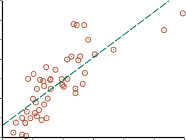
1000
House price in $1000
900
800
700
600
500
400
300
500 1000 1500 2000 2500 3000 3500
House size in square feet
Loss
w0
w1
(a) (b)
—
Figure 19.13 (a) Data points of price versus floor space of houses for sale in Berkeley, CA,
in July 2009, along with the linear function hypothesis that minimizes squared-error loss:
y = 0.232x + 246. (b) Plot of the loss function ∑ j(y j w1x j + w0)2 for various values ofw0, w1. Note that the loss function is convex, with a single global minimum.
Learning rate
Chain rule
The algorithm is as follows:
w ← any point in the parameter space
while not converged do
for each wi in w do∂wi
wi ← wi — α ∂ Loss(w) (19.4)
The parameter α, which we called the step size in Section 4.2, is usually called the learningwhen we are trying to minimize loss in a learning problem. It can be a fixed constant, or
it can decay over time as the learning process proceeds.For univariate regression, the loss is quadratic, so the partial derivative will be linear.
(The only calculus you need to know is the chain rule: ∂g( f (x))/∂x = g′( f (x)) ∂ f (x)/∂x,plus the facts that ∂ x2 = 2x and ∂ x = 1.) Let’s first work out the partial derivatives—the
∂x ∂x
slopes—in the simplified case of only one training example, (x, y):
∂ Loss(w) = ∂ (y— hw(x))2 = 2(y— hw(x)) × ∂ (y— hw(x))
∂wi
∂wi
∂
∂wi
= 2(y— hw(x)) × ∂wi (y— (w1x + w0)) . (19.5)
Applying this to both w0 and w1 we get:∂ Loss(w) = —2(y— hw(x)); ∂ Loss(w) = —2(y— hw(x)) ×x.
∂w0 ∂w1
Plugging this into Equation (19.4), and folding the 2 into the unspecified learning rate α, we
get the following learning rule for the weights:w0 ← w0 + α (y— hw(x)); w1 ← w1 + α (y— hw(x)) ×x.
These updates make intuitive sense: if hw(x) > y (i.e., the output is too large), reduce w0 a
bit, and reduce w1 if x was a positive input but increase w1 if x was a negative input.Section 19.6 Linear Regression and Classification 697
The preceding equations cover one training example. For N training examples, we want
to minimize the sum of the individual losses for each example. The derivative of a sum is the
sum of the derivatives, so we have:w0 ← w0 + α ∑(yj — hw(x j)) ; w1 ← w1 + α ∑(yj — hw(x j)) ×xj .
j j
descent
These updates constitute the batch gradient descent learning rule for univariate linear re- Batch gradient
gression (also called deterministic gradient descent). The loss surface is convex, which
means that there are no local minima to get stuck in, and convergence to the global minimum
is guaranteed (as long as we don’t pick an α that is so large that it overshoots), but may be
very slow: we have to sum over all N training examples for every step, and there may be
many steps. The problem is compounded if N is larger than the processor’s memory size. Astep that covers all the training examples is called an epoch. Epoch
descent
A faster variant is called stochastic gradient descent or SGD: it randomly selects a small Stochastic gradient
number of training examples at each step, and updates according to Equation (19.5). The
original version of SGD selected only one training example for each step, but it is now moreSGD
common to select a minibatch of m out of the N examples. Suppose we have N = 10, 000 Minibatch
examples and choose a minibatch of size m = 100. Then on each step we have reduced the
amount of computation by a factor of 100; but because the standard error of the estimated
mean gradient is proportional to the square root of the number of examples, the standard
error increases by only a factor of 10. So even if we have to take 10 times more steps before
convergence, minibatch SGD is still 10 times faster than full batch SGD in this case.With some CPU or GPU architectures, we can choose m to take advantage of parallel
vector operations, making a step with m examples almost as fast as a step with only a single
example. Within these constraints, we would treat m as a hyperparameter that should be tuned
for each learning problem.Convergence of minibatch SGD is not strictly guaranteed; it can oscillate around the
minimum without settling down. We will see on page 702 how a schedule of decreasing the
learning rate, α, (as in simulated annealing) does guarantee convergence.SGD can be helpful in an online setting, where new data are coming in one at a time, and
the stationarity assumption may not hold. (In fact, SGD is also known as online gradientdescent
descent.) With a good choice for α a model will slowly evolve, remembering some of what Online gradient
it learned in the past, but also adapting to the changes represented by the new data.
SGD is widely applied to models other than linear regression, in particular neural net-
works. Even when the loss surface is not convex, the approach has proven effective in finding
good local minima that are close to the global minimum.Multivariable linear regression
regression
We can easily extend to multivariable linear regression problems, in which each example Multivariable linear
x j is an n-element vector.8 Our hypothesis space is the set of functions of the form
i
hw(x j) = w0 + w1x j,1 + · · · + wnx j,n = w0 + ∑wix j,i .
8 The reader may wish to consult Appendix A for a brief summary of linear algebra. Also, note that we use the
term “multivariable regression” to mean that the input is a vector of multiple values, but the output is a single
variable. We will use the term “multivariate regression” for the case where the output is also a vector of multiple
variables. However, other authors use the two terms interchangeably.698 Chapter 19 Learning from Examples
The w0 term, the intercept, stands out as different from the others. We can fix that by inventing
a dummy input attribute, x j,0, which is defined as always equal to 1. Then h is simply the
dot product of the weights and the input vector (or equivalently, the matrix product of the
transpose of the weights and the input vector):·
hw(x j) = w x j = wTx j = ∑wix j,i .
i
The best vector of weights, w∗, minimizes squared-error loss over the examples:
w∗ = argmin∑L2(y j, w · x j) .
w j
Data matrix
Multivariable linear regression is actually not much more complicated than the univariate
case we just covered. Gradient descent will reach the (unique) minimum of the loss function;
the update equation for each weight wi isj
wi ← wi + α ∑(yj — hw(x j)) ×xj,i . (19.6)


With the tools of linear algebra and vector calculus, it is also possible to solve analytically
for the w that minimizes loss. Let y be the vector of outputs for the training examples, and Xbe the data matrix—that is, the matrix of inputs with one n-dimensional example per row.
Then the vector of predicted outputs is yˆ = Xw and the squared-error loss over all the training
data isL(w) =
yˆ — y 2 = Xw — y 2 .
Pseudoinverse
Normal equationWe set the gradient to zero:
∇wL(w) = 2XT(Xw — y) = 0 .
Rearranging, we find that the minimum-loss weight vector is given by
w∗ = (XTX)—1XTy . (19.7)
We call the expression (XTX)—1XT the pseudoinverse of the data matrix, and Equation (19.7)
is called the normal equation.With univariate linear regression we didn’t have to worry about overfitting. But with
multivariable linear regression in high-dimensional spaces it is possible that some dimension
that is actually irrelevant appears by chance to be useful, resulting in overfitting.Thus, it is common to use regularization on multivariable linear functions to avoid over-
fitting. Recall that with regularization we minimize the total cost of a hypothesis, counting
both the empirical loss and the complexity of the hypothesis:Cost(h) = EmpLoss(h) + λ Complexity(h) .
For linear functions the complexity can be specified as a function of the weights. We can
consider a family of regularization functions:i
Complexity(hw) = Lq(w) = ∑|wi|q .
As with loss functions, with q = 1 we have L1 regularization9, which minimizes the sum
of the absolute values; with q = 2, L2 regularization minimizes the sum of squares. WhichSection 19.6 Linear Regression and Classification 699
2
w*
w
1
2
w*
w
1
w w
Figure 19.14 Why L1 regularization tends to produce a sparse model. Left: With L1 regu-
larization (box), the minimal achievable loss (concentric contours) often occurs on an axis,
meaning a weight of zero. Right: With L2 regularization (circle), the minimal loss is likely
to occur anywhere on the circle, giving no preference to zero weights.regularization function should you pick? That depends on the specific problem, but L1 regu-
larization has an important advantage: it tends to produce a sparse model. That is, it often Sparse model
sets many weights to zero, effectively declaring the corresponding attributes to be completely
irrelevant—just as LEARN-DECISION-TREE does (although by a different mechanism). Hy-potheses that discard attributes can be easier for a human to understand, and may be less
likely to overfit.≤
Figure 19.14 gives an intuitive explanation of why L1 regularization leads to weights of
zero, while L2 regularization does not. Note that minimizing Loss(w) + λComplexity(w) is
equivalent to minimizing Loss(w) subject to the constraint that Complexity(w) c, for some
constant c that is related to λ. Now, in Figure 19.14(a) the diamond-shaped box represents
the set of points w in two-dimensional weight space that have L1 complexity less than c; our
solution will have to be somewhere inside this box. The concentric ovals represent contours
of the loss function, with the minimum loss at the center. We want to find the point in the box
that is closest to the minimum; you can see from the diagram that, for an arbitrary position
of the minimum and its contours, it will be common for the corner of the box to find its way
closest to the minimum, just because the corners are pointy. And of course the corners are
the points that have a value of zero in some dimension.In Figure 19.14(b), we’ve done the same for the L2 complexity measure, which repre-
sents a circle rather than a diamond. Here you can see that, in general, there is no reason
for the intersection to appear on one of the axes; thus L2 regularization does not tend to pro-
duce zero weights. The result is that the number of examples required to find a good h is
linear in the number of irrelevant features for L2 regularization, but only logarithmic with L1
regularization. Empirical evidence on many problems supports this analysis.Another way to look at it is that L1 regularization takes the dimensional axes seriously,
while L2 treats them as arbitrary. The L2 function is spherical, which makes it rotationally9 It is perhaps confusing that the notation L1 and L2 is used for both loss functions and regularization functions.
They need not be used in pairs: you could use L2 loss with L1 regularization, or vice versa.700 Chapter 19 Learning from Examples
7.5
7
6.5
6
5.5
x2
5
4.5
4
3.5
3
2.5
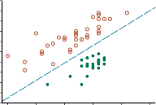
4.5 5 5.5 6 6.5 7
x1
7.5
7
6.5
6
5.5
x2
5
4.5
4
3.5
3
2.5
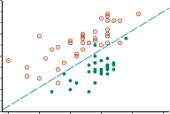
4.5 5 5.5 6 6.5 7
x1
(a) (b)
Figure 19.15 (a) Plot of two seismic data parameters, body wave magnitude x1 and surface
wave magnitude x2, for earthquakes (open orange circles) and nuclear explosions (green cir-
cles) occurring between 1982 and 1990 in Asia and the Middle East (Kebeasy et al., 1998).
Also shown is a decision boundary between the classes. (b) The same domain with more data
points. The earthquakes and explosions are no longer linearly separable.Decision boundary
Linear separator
Linear separabilityinvariant: Imagine a set of points in a plane, measured by their x and y coordinates. Now
imagine rotating the axes by 45o. You’d get a different set of (x′, y′) values representing
the same points. If you apply L2 regularization before and after rotating, you get exactly
the same point as the answer (although the point would be described with the new (x′, y′)
coordinates). That is appropriate when the choice of axes really is arbitrary—when it doesn’t
matter whether your two dimensions are distances north and east; or distances northeast and
southeast. With L1 regularization you’d get a different answer, because the L1 function is not
rotationally invariant. That is appropriate when the axes are not interchangeable; it doesn’t
make sense to rotate “number of bathrooms” 45o towards “lot size.”Linear classifiers with a hard threshold
Linear functions can be used to do classification as well as regression. For example, Fig-
ure 19.15(a) shows data points of two classes: earthquakes (which are of interest to seismolo-
gists) and underground explosions (which are of interest to arms control experts). Each point
is defined by two input values, x1 and x2, that refer to body and surface wave magnitudes
computed from the seismic signal. Given these training data, the task of classification is to
learn a hypothesis h that will take new (x1, x2) points and return either 0 for earthquakes or 1
for explosions.A decision boundary is a line (or a surface, in higher dimensions) that separates the
two classes. In Figure 19.15(a), the decision boundary is a straight line. A linear decision
boundary is called a linear separator and data that admit such a separator are called linearly. The linear separator in this case is defined byx2 = 1.7x1 — 4.9 or — 4.9 + 1.7x1 — x2 = 0 .
The explosions, which we want to classify with value 1, are below and to the right of this line;
they are points for which —4.9 + 1.7x1 — x2 > 0, while earthquakes have —4.9 + 1.7x1 — x2 <Section 19.6 Linear Regression and Classification 701
0. We can make the equation easier to deal with by changing it into the vector dot product
form—with x0 = 1 we have—4.9x0 + 1.7x1 — x2 = 0 ,
and we can define the vector of weights,
w = ⟨—4.9, 1.7,—1⟩,
and write the classification hypothesis
hw(x) = 1 if w · x ≥ 0 and 0 otherwise.
·
Alternatively, we can think of h as the result of passing the linear function w x through a
threshold function: Threshold function
hw(x) = Threshold(w · x) where Threshold(z) = 1 if z ≥ 0 and 0 otherwise.
The threshold function is shown in Figure 19.17(a).
·
Now that the hypothesis hw(x) has a well-defined mathematical form, we can think about
choosing the weights w to minimize the loss. In Sections 19.6.1 and 19.6.3, we did this both
in closed form (by setting the gradient to zero and solving for the weights) and by gradient
descent in weight space. Here we cannot do either of those things because the gradient is zero
almost everywhere in weight space except at those points where w x = 0, and at those points
the gradient is undefined.There is, however, a simple weight update rule that converges to a solution—that is, to
a linear separator that classifies the data perfectly—provided the data are linearly separable.For a single example (x, y), we have
wi ← wi + α (y— hw(x)) ×xi (19.8)
which is essentially identical to Equation (19.6), the update rule for linear regression! This
rule
rule is called the perceptron learning rule, for reasons that will become clear in Chapter 22. Perceptron learning
Because we are considering a 0/1 classification problem, however, the behavior is somewhat
different. Both the true value y and the hypothesis output hw(x) are either 0 or 1, so there are
three possibilities:If the output is correct (i.e., y = hw(x)) then the weights are not changed.
If y is 1 but hw(x) is 0, then wi is increased when the corresponding input xi is positive
and decreased when xi is negative. This makes sense, because we want to make w · xbigger so that hw(x) outputs a 1.If y is 0 but hw(x) is 1, then wi is decreased when the corresponding input xi is positive
and increased when xi is negative. This makes sense, because we want to make w · xsmaller so that hw(x) outputs a 0.
Typically the learning rule is applied one example at a time, choosing examples at random (as
in stochastic gradient descent). Figure 19.16(a) shows a training curve for this learning rule Training curve
applied to the earthquake/explosion data shown in Figure 19.15(a). A training curve measures
the classifier performance on a fixed training set as the learning process proceeds one update
at a time on that training set. The curve shows the update rule converging to a zero-error
linear separator. The “convergence” process isn’t exactly pretty, but it always works. This
particular run takes 657 steps to converge, for a data set with 63 examples, so each example
is presented roughly 10 times on average. Typically, the variation across runs is large.702 Chapter 19 Learning from Examples
Proportion correct
1
0.9
0.8
0.7
0.6
0.5
0.4
0 100 200 300 400 500 600 700
Number of weight updates
1
Proportion correct
0.9
0.8
0.7
0.6
0.5
0.4
0 25000 50000 75000
Number of weight updates
1
Proportion correct
0.9
0.8
0.7
0.6
0.5
0.4
0 25000 50000 75000
Number of weight updates
(a) (b) (c)
Figure 19.16 (a) Plot of total training-set accuracy vs. number of iterations through the
training set for the perceptron learning rule, given the earthquake/explosion data in Fig-
ure 19.15(a). (b) The same plot for the noisy, nonseparable data in Figure 19.15(b); note
the change in scale of the x-axis. (c) The same plot as in (b), with a learning rate schedule
α(t) = 1000/(1000 + t).We have said that the perceptron learning rule converges to a perfect linear separator
when the data points are linearly separable; but what if they are not? This situation is all
too common in the real world. For example, Figure 19.15(b) adds back in the data points
left out by Kebeasy et al. (1998) when they plotted the data shown in Figure 19.15(a). In
Figure 19.16(b), we show the perceptron learning rule failing to converge even after 10,000
steps: even though it hits the minimum-error solution (three errors) many times, the algorithm
keeps changing the weights. In general, the perceptron rule may not converge to a stable
solution for fixed learning rate α, but if α decays as O(1/t) where t is the iteration number,
then the rule can be shown to converge to a minimum-error solution when examples are
presented in a random sequence.10 It can also be shown that finding the minimum-error
solution is NP-hard, so one expects that many presentations of the examples will be required
for convergence to be achieved. Figure 19.16(c) shows the training process with a learning
rate schedule α(t) = 1000/(1000 + t): convergence is not perfect after 100,000 iterations, but
it is much better than the fixed-α case.Linear classification with logistic regression
We have seen that passing the output of a linear function through the threshold function
creates a linear classifier; yet the hard nature of the threshold causes some problems: the hy-
pothesis hw(x) is not differentiable and is in fact a discontinuous function of its inputs and its
weights. This makes learning with the perceptron rule a very unpredictable adventure. Fur-
thermore, the linear classifier always announces a completely confident prediction of 1 or 0,
even for examples that are very close to the boundary; it would be better if it could classify
some examples as a clear 0 or 1, and others as unclear borderline cases.All of these issues can be resolved to a large extent by softening the threshold function—
approximating the hard threshold with a continuous, differentiable function. In Chapter 13
(page 442), we saw two functions that look like soft thresholds: the integral of the standard
normal distribution (used for the probit model) and the logistic function (used for the logit10 Technically, we require that ∑∞
α(t) =∞ and ∑∞
α2(t) < ∞. The learning rate α(t) = O(1/t) satisfies these
t = 1
t = 1
conditions. Often we use c/(c + t) for some fairly large constant c.
Section 19.6 Linear Regression and Classification 703
1
0.5
0
-6 -4 -2 0 2 4 6
1
0.5
0
-6 -4 -2 0 2 4 6
1
0.8
0.6
0.4
0.2
0
-2 0
x1
2 4 6
108 6
4 2 0
-2-4
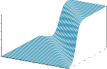
x2
(a) (b) (c)
Figure 19.17 (a) The hard threshold function Threshold(z) with 0/1 output. Note
that the function is nondifferentiable at z = 0. (b) The logistic function, Logistic(z) =+e
1 1 —z , also known as the sigmoid function. (c) Plot of a logistic regression hypothesis
hw(x) = Logistic(w · x) for the data shown in Figure 19.15(b).
model). Although the two functions are very similar in shape, the logistic function
Logistic(z) = 1
1 + e—z
has more convenient mathematical properties. The function is shown in Figure 19.17(b).
With the logistic function replacing the threshold function, we now have
1 + e—w·x
hw(x) = Logistic(w · x) = 1 .
An example of such a hypothesis for the two-input earthquake/explosion problem is shown in
Figure 19.17(c). Notice that the output, being a number between 0 and 1, can be interpreted
as a probability of belonging to the class labeled 1. The hypothesis forms a soft boundary
in the input space and gives a probability of 0.5 for any input at the center of the boundary
region, and approaches 0 or 1 as we move away from the boundary.The process of fitting the weights of this model to minimize loss on a data set is called
logistic regression. There is no easy closed-form solution to find the optimal value of w with Logistic regression
this model, but the gradient descent computation is straightforward. Because our hypotheses
no longer output just 0 or 1, we will use the L2 loss function; also, to keep the formulas
readable, we’ll use g to stand for the logistic function, with g′ its derivative.For a single example (x, y), the derivation of the gradient is the same as for linear re-
gression (Equation (19.5)) up to the point where the actual form of h is inserted. (For this
derivation, we again need the chain rule.) We have∂ Loss(w) = ∂ (y— hw(x))2
∂wi
∂wi
∂
= 2(y— hw(x)) × ∂wi (y— hw(x))
∂wi
= —2(y— hw(x)) ×g′(w · x) × ∂ w · x
= —2(y— hw(x)) ×g′(w · x) ×xi .
704 Chapter 19 Learning from Examples
Proportion correct
1
0.9
0.8
0.7
0.6
0.5
0.4
0 1000 2000 3000 4000
Number of weight updates
1
Proportion correct
0.9
0.8
0.7
0.6
0.5
0.4
0 25000 50000 75000
Number of weight updates
1
Proportion correct
0.9
0.8
0.7
0.6
0.5
0.4
0 25000 50000 75000
Number of weight updates
(a) (b) (c)
Figure 19.18 Repeat of the experiments in Figure 19.16 using logistic regression. The plot
in (a) covers 5000 iterations rather than 700, while the plots in (b) and (c) use the same scale
as before.The derivative g′ of the logistic function satisfies g′(z) = g(z)(1 — g(z)), so we have
g′(w · x) = g(w · x)(1 — g(w · x)) = hw(x)(1 — hw(x))
—
so the weight update for minimizing the loss takes a step in the direction of the difference
between input and prediction, (y hw(x)), and the length of that step depends on the constant
α and g′:wi ← wi + α (y— hw(x)) ×hw(x)(1 — hw(x)) ×xi . (19.9)
Repeating the experiments of Figure 19.16 with logistic regression instead of the linear
threshold classifier, we obtain the results shown in Figure 19.18. In (a), the linearly sep-
arable case, logistic regression is somewhat slower to converge, but behaves much more
predictably. In (b) and (c), where the data are noisy and nonseparable, logistic regression
converges far more quickly and reliably. These advantages tend to carry over into real-world
applications, and logistic regression has become one of the most popular classification tech-
niques for problems in medicine, marketing, survey analysis, credit scoring, public health,
and other applications.Parametric model
Nonparametric
modelInstance-based
learning
Nonparametric Models
Linear regression uses the training data to estimate a fixed set of parameters w. That defines
our hypothesis hw(x), and at that point we can throw away the training data, because they
are all summarized by w. A learning model that summarizes data with a set of parameters of
fixed size (independent of the number of training examples) is called a parametric model.When data sets are small, it makes sense to have a strong restriction on the allowable
hypotheses, to avoid overfitting. But when there are millions or billions of examples to learn
from, it seems like a better idea to let the data speak for themselves rather than forcing them
to speak through a tiny vector of parameters. If the data say that the correct answer is a very
wiggly function, we shouldn’t restrict ourselves to linear or slightly wiggly functions.A nonparametric model is one that cannot be characterized by a bounded set of parame-
ters. For example, the piecewise linear function from Figure 19.1 retains all the data points as
part of the model. Learning methods that do this have also been described as instance-basedor memory-based learning. The simplest instance-based learning method is tableSection 19.7 Nonparametric Models 705
7.5
7
6.5
6
5.5
x2
5
4.5
4
3.5
3
2.5
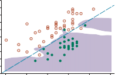
4.5 5 5.5 6 6.5 7
x1
7.5
7
6.5
6
5.5
x2
5
4.5
4
3.5
3
2.5
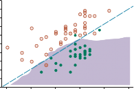
4.5 5 5.5 6 6.5 7
x1
(k = 1) (k = 5)
Figure 19.19 (a) A k-nearest-neighbors model showing the extent of the explosion class for
the data in Figure 19.15, with k = 1. Overfitting is apparent. (b) With k = 5, the overfitting
problem goes away for this data set.lookup: take all the training examples, put them in a lookup table, and then when asked for Table lookup
h(x), see if x is in the table; if it is, return the corresponding y.
The problem with this method is that it does not generalize well: when x is not in the
table we have no information about a plausible value.Nearest-neighbor models
We can improve on table lookup with a slight variation: given a query xq, instead of finding
an example that is equal to xq, find the k examples that are nearest to xq. This is called k-nearest-neighbors lookup. We’ll use the notation NN(k, xq) to denote the set of k neighbors Nearest neighbors
nearest to xq.
⟨ ⟩
To do classification, find the set of neighbors NN(k, xq) and take the most common output
value—for example, if k = 3 and the output values are Yes, No, Yes , then the classification
will be Yes. To avoid ties on binary classification, k is usually chosen to be an odd number.To do regression, we can take the mean or median of the k neighbors, or we can solve a
linear regression problem on the neighbors. The piecewise linear function from Figure 19.1
solves a (trivial) linear regression problem with the two data points to the right and left of xq.
(When the xi data points are equally spaced, these will be the two nearest neighbors.)In Figure 19.19, we show the decision boundary of k-nearest-neighbors classification for
k = 1 and 5 on the earthquake data set from Figure 19.15. Nonparametric methods are still
subject to underfitting and overfitting, just like parametric methods. In this case 1-nearest-
neighbors is overfitting; it reacts too much to the black outlier in the upper right and the white
outlier at (5.4, 3.7). The 5-nearest-neighbors decision boundary is good; higher k would
underfit. As usual, cross-validation can be used to select the best value of k.The very word “nearest” implies a distance metric. How do we measure the distance from
a query point xq to an example point x j? Typically, distances are measured with a Minkowskidistance or Lp norm, defined as Minkowski distance
i
Lp(x j, xq) = (∑|xj,i — xq,i|p)1/p .
With p = 2 this is Euclidean distance and with p = 1 it is Manhattan distance. With Boolean
706 Chapter 19 Learning from Examples
Hamming distance
Normalization
Mahalanobis
distanceCurse of
dimensionalityK-d tree
attribute values, the number of attributes on which the two points differ is called the Ham-. Often Euclidean distance is used if the dimensions are measuring similar
properties, such as the width, height and depth of parts, and Manhattan distance is used if
they are dissimilar, such as age, weight, and gender of a patient. Note that if we use the raw
numbers from each dimension then the total distance will be affected by a change in units
in any dimension. That is, if we change the height dimension from meters to miles while
keeping the width and depth dimensions the same, we’ll get different nearest neighbors. And
how do we compare a difference in age to a difference in weight? A common approach is
to apply normalization to the measurements in each dimension. We can compute the mean
µi and standard deviation σi of the values in each dimension, and rescale them so that x j,i
becomes (x j,i µi)/σi. A more complex metric known as the Mahalanobis distance takes
into account the covariance between dimensions.—
In low-dimensional spaces with plenty of data, nearest neighbors works very well: we
are likely to have enough nearby data points to get a good answer. But as the number of
dimensions rises we encounter a problem: the nearest neighbors in high-dimensional spaces
are usually not very near! Consider k-nearest-neighbors on a data set of N points uniformly
distributed throughout the interior of an n-dimensional unit hypercube. We’ll define the k-
neighborhood of a point as the smallest hypercube that contains the k nearest neighbors. Let
l be the average side length of a neighborhood. Then the volume of the neighborhood (which
contains k points) is ln and the volume of the full cube (which contains N points) is 1. So, on
average, ln = k/N. Taking nth roots of both sides we get l = (k/N)1/n.To be concrete, let k = 10 and N = 1, 000, 000. In two dimensions (n = 2; a unit square),
the average neighborhood has l = 0.003, a small fraction of the unit square, and in 3 dimen-
sions l is just 2% of the edge length of the unit cube. But by the time we get to 17 dimensions,
l is half the edge length of the unit hypercube, and in 200 dimensions it is 94%. This problem
has been called the curse of dimensionality.Another way to look at it: consider the points that fall within a thin shell making up the
outer 1% of the unit hypercube. These are outliers; in general it will be hard to find a good
value for them because we will be extrapolating rather than interpolating. In one dimension,
these outliers are only 2% of the points on the unit line (those points where x < .01 or x > .99),
but in 200 dimensions, over 98% of the points fall within this thin shell—almost all the points
are outliers. You can see an example of a poor nearest-neighbors fit on outliers if you look
ahead to Figure 19.20(b).The NN(k, xq) function is conceptually trivial: given a set of N examples and a query xq,
iterate through the examples, measure the distance to xq from each one, and keep the best k.
If we are satisfied with an implementation that takes O(N) execution time, then that is the
end of the story. But instance-based methods are designed for large data sets, so we would
like something faster. The next two subsections show how trees and hash tables can be used
to speed up the computation.Finding nearest neighbors with k-d trees
A balanced binary tree over data with an arbitrary number of dimensions is called a k-d, for k-dimensional tree. The construction of a k-d tree is similar to the construction of a
balanced binary tree. We start with a set of examples and at the root node we split them along
the ith dimension by testing whether xi ≤ m, where m is the median of the examples alongSection 19.7 Nonparametric Models 707
the ith dimension; thus half the examples will be in the left branch of the tree and half in the
right. We then recursively make a tree for the left and right sets of examples, stopping when
there are fewer than two examples left. To choose a dimension to split on at each node of the
tree, one can simply select dimension i mod n at level i of the tree. (Note that we may need
to split on any given dimension several times as we proceed down the tree.) Another strategy
is to split on the dimension that has the widest spread of values.Exact lookup from a k-d tree is just like lookup from a binary tree (with the slight com-
plication that you need to pay attention to which dimension you are testing at each node). But
nearest-neighbor lookup is more complicated. As we go down the branches, splitting the ex-
amples in half, in some cases we can ignore half of the examples. But not always. Sometimes
the point we are querying for falls very close to the dividing boundary. The query point itself
might be on the left hand side of the boundary, but one or more of the k nearest neighbors
might actually be on the right-hand side.We have to test for this possibility by computing the distance of the query point to the
dividing boundary, and then searching both sides if we can’t find k examples on the left that
are closer than this distance. Because of this problem, k-d trees are appropriate only when
there are many more examples than dimensions, preferably at least 2n examples. Thus, k-d
trees are a good choice for up to about 10 dimensions when there are thousands of examples
or up to 20 dimensions with millions of examples.Locality-sensitive hashing
Hash tables have the potential to provide even faster lookup than binary trees. But how can
we find nearest neighbors using a hash table, when hash codes rely on an exact match? Hash
codes randomly distribute values among the bins, but we want to have near points groupedhash
together in the same bin; we want a locality-sensitive hash (LSH). Locality-sensitive
We can’t use hashes to solve NN(k, xq) exactly, but with a clever use of randomized
algorithms, we can find an approximate solution. First we define the approximate near-near-neighbors
neighbors problem: given a data set of example points and a query point xq, find, with high Approximate
probability, an example point (or points) that is near xq. To be more precise, we require that
if there is a point x j that is within a radius r of xq, then with high probability the algorithm
will find a point x j′ that is within distance cr of xq. If there is no point within radius rthen the algorithm is allowed to report failure. The values of c and “high probability” are
hyperparameters of the algorithm.To solve approximate near neighbors, we will need a hash function g(x) that has the
property that, for any two points x j and x j′ , the probability that they have the same hash code
is small if their distance is more than cr, and is high if their distance is less than r. For
simplicity we will treat each point as a bit string. (Any features that are not Boolean can be
encoded into a set of Boolean features.)We rely on the intuition that if two points are close together in an n-dimensional space,
then they will necessarily be close when projected down onto a one-dimensional space (a
line). In fact, we can discretize the line into bins—hash buckets—so that, with high prob-
ability, near points project down to the same bin. Points that are far away from each other
will tend to project down into different bins, but there will always be a few projections that
coincidentally project far-apart points into the same bin. Thus, the bin for point xq contains
many (but not all) points that are near xq, and it might contain some points that are far away.708 Chapter 19 Learning from Examples
8
7
6
5
4
3
2
1
0
0 2 4 6 8 10 12 14
8
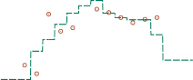
7
6
5
4
3
2
1
0
0 2 4 6 8 10 12 14
(a) (b)
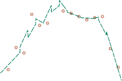
8
7
6
5
4
3
2
1
0
0 2 4 6 8 10 12 14
8
7
6
5
4
3
2
1
0
0 2 4 6 8 10 12 14
(c) (d)
Figure 19.20 Nonparametric regression models: (a) connect the dots, (b) 3-nearest neigh-
bors average, (c) 3-nearest-neighbors linear regression, (d) locally weighted regression with
a quadratic kernel of width 10.The trick of LSH is to create multiple random projections and combine them. A random
projection is just a random subset of the bit-string representation. We choose l different
random projections and create l hash tables, g1(x),..., gl(x). We then enter all the examples
into each hash table. Then when given a query point xq, we fetch the set of points in bin
gi(xq) of each hash table, and union these l sets together into a set of candidate points, C.
Then we compute the actual distance to xq for each of the points in C and return the k closest
points. With high probability, each of the points that are near to xq will show up in at least
one of the bins, and although some far-away points will show up as well, we can ignore
those. With large real-world problems, such as finding the near neighbors in a data set of 13
million Web images using 512 dimensions (Torralba et al., 2008), locality-sensitive hashing
needs to examine only a few thousand images out of 13 million to find nearest neighbors—a
thousand-fold speedup over exhaustive or k-d tree approaches.Section 19.7 Nonparametric Models 709
Nonparametric regression
Now we’ll look at nonparametric approaches to regression rather than classification. Fig-
ure 19.20 shows an example of some different models. In (a), we have perhaps the simplest
method of all, known informally as “connect-the-dots,” and superciliously as “piecewise-
linear nonparametric regression.” This model creates a function h(x) that, when given a query
xq, considers the training examples immediately to the left and right of xq, and interpolates
between them. When noise is low, this trivial method is actually not too bad, which is why
it is a standard feature of charting software in spreadsheets. But when the data are noisy, the
resulting function is spiky and does not generalize well.regression
k-nearest-neighbors regression improves on connect-the-dots. Instead of using just the Nearest-neighbors
two examples to the left and right of a query point xq, we use the k nearest neighbors. (Here
we are using k = 3.). A larger value of k tends to smooth out the magnitude of the spikes,
although the resulting function has discontinuities. Figure 19.20 shows two versions of k-
nearest-neighbors regression. In (b), we have the k-nearest-neighbors average: h(x) is themean value of the k points, ∑ y j/k. Notice that at the outlying points, near x = 0 and x = 14,
the estimates are poor because all the evidence comes from one side (the interior), and ignoresthe trend. In (c), we have k-nearest-neighbor linear regression, which finds the best line
through the k examples. This does a better job of capturing trends at the outliers, but is still
discontinuous. In both (b) and (c), we’re left with the question of how to choose a good value
for k. The answer, as usual, is cross-validation.regression
Locally weighted regression (Figure 19.20(d)) gives us the advantages of nearest neigh- Locally weighted
bors, without the discontinuities. To avoid discontinuities in h(x), we need to avoid disconti-
nuities in the set of examples we use to estimate h(x). The idea of locally weighted regression
is that at each query point xq, the examples that are close to xq are weighted heavily, and the
examples that are farther away are weighted less heavily, and the farthest not at all. The
decrease in weight over distance is typically gradual, not sudden.K
K
We decide how much to weight each example with a function known as a kernel, whose Kernel
input is a distance between the query point and the example. A kernel function is a de-
creasing function of distance with a maximum at 0, so that (Distance(x j, xq)) gives higher
weight to examples x j that are closer to the query point xq for which we are trying to predictthe function value. The integral of the kernel value over the entire input space for x must be
finite—and if we choose to make the integral 1, certain calculations are easier.K — | |
Figure 19.20(d) was generated with a quadratic kernel, (d) = max(0, 1 (2 d /w)2),
with kernel width w = 10. Other shapes, such as Gaussians, are also used. Typically, the
width matters more than the exact shape: this is a hyperparameter of the model that is best
chosen by cross-validation. If the kernels are too wide we’ll get underfitting and if they are
too narrow we’ll get overfitting. In Figure 19.20(d), a kernel width of 10 gives a smooth curve
that looks just about right.Doing locally weighted regression with kernels is now straightforward. For a given query
point xq we solve the following weighted regression problem:w∗ = argmin∑K(Distance(xq, x j))(yj — w · x j)2 ,
w j
where Distance is any of the distance metrics discussed for nearest neighbors. Then the
answer is h(xq) = w∗ · xq.710 Chapter 19 Learning from Examples
Support vector
machine (SVM)Note that we need to solve a new regression problem for every query point—that’s what
it means to be local. (In ordinary linear regression, we solved the regression problem once,
globally, and then used the same hw for any query point.) Mitigating against this extra work
is the fact that each regression problem will be easier to solve, because it involves only the
examples with nonzero weight—the examples that are within the kernel width of the query.
When kernel widths are small, this may be just a few points.Most nonparametric models have the advantage that it is easy to do leave-one-out cross-
validation without having to recompute everything. With a k-nearest-neighbors model, for
instance, when given a test example (x, y) we retrieve the k nearest neighbors once, compute
the per-example loss L(y, h(x)) from them, and record that as the leave-one-out result for
every example that is not one of the neighbors. Then we retrieve the k + 1 nearest neighbors
and record distinct results for leaving out each of the k neighbors. With N examples the whole
process is O(k), not O(kN).Support vector machines
In the early 2000s, the support vector machine (SVM) model class was the most popular
approach for “off-the-shelf” supervised learning, for when you don’t have any specialized
prior knowledge about a domain. That position has now been taken over by deep learning
networks and random forests, but SVMs retain three attractive properties:SVMs construct a maximum margin separator—a decision boundary with the largest
possible distance to example points. This helps them generalize well.SVMs create a linear separating hyperplane, but they have the ability to embed the
data into a higher-dimensional space, using the so-called kernel trick. Often, data that
are not linearly separable in the original input space are easily separable in the higher-
dimensional space.SVMs are nonparametric—the separating hyperplane is defined by a set of example
points, not by a collection of parameter values. But while nearest-neighbor models
need to retain all the examples, an SVM model keeps only the examples that are closest
to the separating plane—usually only a small constant times the number of dimensions.
Thus SVMs combine the advantages of nonparametric and parametric models: they
have the flexibility to represent complex functions, but they are resistant to overfitting.We see in Figure 19.21(a) a binary classification problem with three candidate decision
boundaries, each a linear separator. Each of them is consistent with all the examples, so
from the point of view of 0/1 loss, each would be equally good. Logistic regression would
find some separating line; the exact location of the line depends on all the example points.
The key insight of SVMs is that some examples are more important than others, and that
paying attention to them can lead to better generalization.Consider the lowest of the three separating lines in (a). It comes very close to five of the
black examples. Although it classifies all the examples correctly, and thus minimizes loss, it
should make you nervous that so many examples are close to the line; it may be that other
black examples will turn out to fall on the wrong side of the line.SVMs address this issue: Instead of minimizing expected empirical loss on the training
data, SVMs attempt to minimize expected generalization loss. We don’t know where the
as-yet-unseen points may fall, but under the probabilistic assumption that they are drawnSection 19.7 Nonparametric Models 711
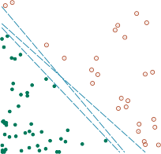
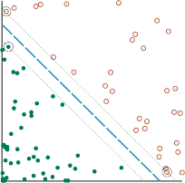
1 1
0.8 0.8
0.6 0.6
0.4 0.4
0.2 0.2
0
0 0.2 0.4 0.6 0.8 1
0
0 0.2 0.4 0.6 0.8 1
(a) (b)
Figure 19.21 Support vector machine classification: (a) Two classes of points (orange open
and green filled circles) and three candidate linear separators. (b) The maximum margin
separator (heavy line), is at the midpoint of the margin (area between dashed lines). The
support vectors (points with large black circles) are the examples closest to the separator;
here there are three.from the same distribution as the previously seen examples, there are some arguments from
computational learning theory (Section 19.5) suggesting that we minimize generalization loss
by choosing the separator that is farthest away from the examples we have seen so far. Weseparator
call this separator, shown in Figure 19.21(b) the maximum margin separator. The margin Maximum margin
is the width of the area bounded by dashed lines in the figure—twice the distance from the
separator to the nearest example point.Now, how do we find this separator? Before showing the equations, some notation: Tra-
ditionally SVMs use the convention that class labels are +1 and -1, instead of the +1 and 0
we have been using so far. Also, whereas we previously put the intercept into the weight
vector w (and a corresponding dummy 1 value into x j,0), SVMs do not do that; they keep the
intercept as a separate parameter, b.{ · }
With that in mind, the separator is defined as the set of points x : w x + b = 0 . We
could search the space of w and b with gradient descent to find the parameters that maximize
the margin while correctly classifying all the examples.However, it turns out there is another approach to solving this problem. We won’t show
the details, but will just say that there is an alternative representation called the dual repre-
sentation, in which the optimal solution is found by solvingargmax∑αj — 1 ∑αjαky jyk(x j · xk) (19.10)
Margin
α j 2 j,k
programming
subject to the constraints αj ≥ 0 and ∑ j αjy j = 0. This is a quadratic programming op- Quadratic
timization problem, for which there are good software packages. Once we have found the
712 Chapter 19 Learning from Examples
►
Support vector
vector α we can get back to w with the equation w = ∑ j αjy jx j, or we can stay in the dual
representation. There are three important properties of Equation (19.10). First, the expres-sion is convex; it has a single global maximum that can be found efficiently. Second, the data
enter the expression only in the form of dot products of pairs of points. This second property
is also true of the equation for the separator itself; once the optimal αj have been calculated,
the equation is11j
h(x) = sign ∑αjy j(x · x j) — b! . (19.11)
A final important property is that the weights αj associated with each data point are zero ex-
cept for the support vectors—the points closest to the separator. (They are called “support”
vectors because they “hold up” the separating plane.) Because there are usually many fewer
support vectors than examples, SVMs gain some of the advantages of parametric models.—
What if the examples are not linearly separable? Figure 19.22(a) shows an input space
defined by attributes x =(x1, x2), with positive examples (y = + 1) inside a circular region and
negative examples (y = 1) outside. Clearly, there is no linear separator for this problem.
Now, suppose we re-express the input data—that is, we map each input vector x to a new
vector of feature values, F(x). In particular, let us use the three featuresf1 = x2 , f2 = x2 , f3 = √2x1x2 . (19.12)
1 2
Kernel function
We will see shortly where these came from, but for now, just look at what happens. Fig-
ure 19.22(b) shows the data in the new, three-dimensional space defined by the three features;
the data are linearly separable in this space! This phenomenon is actually fairly general: if
data are mapped into a space of sufficiently high dimension, then they will almost always be
linearly separable—if you look at a set of points from enough directions, you’ll find a way to
make them line up. Here, we used only three dimensions;12 Exercise 19.SVME asks you to
show that four dimensions suffice for linearly separating a circle anywhere in the plane (not
just at the origin), and five dimensions suffice to linearly separate any ellipse. In general (with
some special cases excepted) if we have N data points then they will always be separable in
spaces of N 1 dimensions or more (Exercise 19.EMBE).—
·
· ·
Now, we would not usually expect to find a linear separator in the input space x, but
we can find linear separators in the high-dimensional feature space F(x) simply by replacing
x j xk in Equation (19.10) with F(x j) F(xk). This by itself is not remarkable—replacing x by
F(x) in any learning algorithm has the required effect—but the dot product has some special
properties. It turns out that F(x j) F(xk) can often be computed without first computing F
for each point. In our three-dimensional feature space defined by Equation (19.12), a little bit
of algebra shows thatF(x j) · F(xk) = (x j · xk)2 .
·
(That’s why the √2 is in f3.) The expression (x j xk)2 is called a kernel function,13 and
is usually written as K(x j, xk). The kernel function can be applied to pairs of input data to
11 The function sign(x) returns +1 for a positive x, —1 for a negative x.
12 The reader may notice that we could have used just f1 and f2, but the 3D mapping illustrates the idea better.
13 This usage of “kernel function” is slightly different from the kernels in locally weighted regression. Some
SVM kernels are distance metrics, but not all are.Section 19.7 Nonparametric Models 713
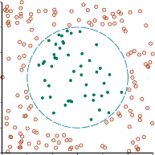
-1.5 -1 -0.5 0 0.5 1 1.5
x1
1
1.5
x
2
2
0.5
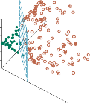
x2
1.5
1
0.5
2x1x2
3
0
2
1
-0.5
0
-1
-2
2.5
-1
-3
2
-1.5
0
0.5
1
1
1.5
x2
2
2.5 0
(a) (b)
1
2
Figure 19.22 (a) A two-dimensional training set with positive examples as green filled cir-
cles and negative examples as orange open circles. The true decision boundary, x2 + x2 ≤ 1,is also √shown. (b) The same data after mapping into a three-dimensional input space
(x2, x2, 2x1x2). The circular decision boundary in (a) becomes a linear decision boundary
1 2
in three dimensions. Figure 19.21(b) gives a closeup of the separator in (b).
·
evaluate dot products in some corresponding feature space. So, we can find linear separators
in the higher-dimensional feature space F(x) simply by replacing x j xk in Equation (19.10)
with a kernel function K(x j, xk). Thus, we can learn in the higher-dimensional space, but we
compute only kernel functions rather than the full list of features for each data point.·
The next step is to see that there’s nothing special about the kernel K(x j, xk) =(x j xk)2. It
corresponds to a particular higher-dimensional feature space, but other kernel functions corre-spond to other feature spaces. A venerable result in mathematics, Mercer’s theorem (1909), Mercer’s theorem
tells us that any “reasonable”14 kernel function corresponds to some feature space. These
feature spaces can be very large, even for innocuous-looking kernels. For example, the poly-nomial kernel, K(x j, xk) =(1 + x j · xk)d, corresponds to a feature space whose dimension is Polynomial kernel
exponential in d. A common kernel is the Gaussian: K(x j, xk) = e—γ|xj—xk|2 .
The kernel trick
This then is the clever kernel trick: Plugging these kernels into Equation (19.10), optimal Kernel trick
linear separators can be found efficiently in feature spaces with billions of (or even infinitely
many) dimensions. The resulting linear separators, when mapped back to the original in-
put space, can correspond to arbitrarily wiggly, nonlinear decision boundaries between the
positive and negative examples.In the case of inherently noisy data, we may not want a linear separator in some high-
dimensional space. Rather, we’d like a decision surface in a lower-dimensional space that14 Here, “reasonable” means that the matrix K jk = K(x j, xk ) is positive definite.
714 Chapter 19 Learning from Examples
–
–
–
–
–
–
–
–
–
–
–
–
–
–
–
–
–
–
+
+ +
+ + + +
+
+ +
–+
+
+ +
–
–
–
– –
–
–
–
–
–
– –
–
–
–
–
–
–
– –
––
Figure 19.23 Illustration of the increased expressive power obtained by ensemble learning.
We take three linear threshold hypotheses, each of which classifies positively on the unshaded
side, and classify as positive any example classified positively by all three. The resulting
triangular region is a hypothesis not expressible in the original hypothesis space.Soft margin
Kernelization
Ensemble learning
Base model
Ensemble modeldoes not cleanly separate the classes, but reflects the reality of the noisy data. That is pos-
sible with the soft margin classifier, which allows examples to fall on the wrong side of the
decision boundary, but assigns them a penalty proportional to the distance required to move
them back to the correct side.The kernel method can be applied not only with learning algorithms that find optimal
linear separators, but also with any other algorithm that can be reformulated to work only
with dot products of pairs of data points, as in Equations (19.10) and (19.11). Once this is
done, the dot product is replaced by a kernel function and we have a kernelized version of
the algorithm.
Ensemble Learning
So far we have looked at learning methods in which a single hypothesis is used to make pre-
dictions. The idea of ensemble learning is to select a collection, or ensemble, of hypotheses,
h1, h2, . . . , hn, and combine their predictions by averaging, voting, or by another level of ma-
chine learning. We call the individual hypotheses base models and their combination an
ensemble model.There are two reasons to do this. The first is to reduce bias. The hypothesis space of
a base model may be too restrictive, imposing a strong bias (such as the bias of a linear
decision boundary in logistic regression). An ensemble can be more expressive, and thus
have less bias, than the base models. Figure 19.23 shows that an ensemble of three linear
classifiers can represent a triangular region that could not be represented by a single linear
classifier. An ensemble of n linear classifiers allows more functions to be realizable, at a cost
of only n times more computation; this is often better than allowing a completely general
hypothesis space that might require exponentially more computation.Section 19.8 Ensemble Learning 715
The second reason is to reduce variance. Consider an ensemble of K = 5 binary classifiers
that we combine using majority voting. For the ensemble to misclassify a new example, at. The hope is that this is less likely than
a single misclassification by a single classifier. To quantify that, suppose you have trained a
single classifier that is correct in 80% of cases. Now create an ensemble of 5 classifiers, each
trained on a different subset of the data so that they are independent. Let’s assume this leads
to some reduction in quality, and each individual classifier is correct in only 75% of cases.
But together, the majority vote of the ensemble will be correct in 89% of cases (and 99% with
17 classifiers), assuming true independence.In practice the independence assumption is unreasonable—individual classifiers share
some of the same data and assumptions, and thus are not completely independent, and will
share some of the same errors. But if the component classifiers are at least somewhat un-
correlated then ensemble learning will make fewer misclassifications. We will now consider
four ways of creating ensembles: bagging, random forests, stacking, and boosting.Bagging
In bagging,15 we generate K distinct training sets by sampling with replacement from the Bagging
original training set. That is, we randomly pick N examples from the training set, but each
of those picks might be an example we picked before. We then run our machine learning
algorithm on the N examples to get a hypothesis. We repeat this process K times, getting Kdifferent hypotheses. Then, when asked to predict the value of a new input, we aggregate
the predictions from all K hypotheses. For classification problems, that means taking the
plurality vote (the majority vote for binary classification). For regression problems, the final
output is the average:1 K
h
K
(x) = ∑ hi(x)
i=1
Bagging tends to reduce variance and is a standard approach when there is limited data or
when the base model is seen to be overfitting. Bagging can be applied to any class of model,
but is most commonly used with decision trees. It is appropriate because decision trees are
unstable: a slightly different set of examples can lead to a wildly different tree. Bagging
smoothes out this variance. If you have access to multiple computers then bagging is efficient,
because the hypotheses can be computed in parallel.Random forests
Unfortunately, bagging decision trees often ends up giving us K trees that are highly corre-
lated. If there is one attribute with a very high information gain, it is likely to be the root ofmost of the trees. The random forest model is a form of decision tree bagging in which we Random forest
take extra steps to make the ensemble of K trees more diverse, to reduce variance. Random
forests can be used for classification or regression.The key idea is to randomly vary the attribute choices (rather than the training examples).
At each split point in constructing the tree, we select a random sampling of attributes, and then
compute which of those gives the highest information gain. If there are n attributes, a common15 Note on terminology: In statistics, a sample with replacement is called a bootstrap, and “bagging” is short for
“bootstrap aggregating.”716 Chapter 19 Learning from Examples
default choice is that each split randomly picks √n attributes to consider for classification
problems, or n/3 for regression problems.A further improvement is to use randomness in selecting the split point value: for each
selected attribute, we randomly sample several candidate values from a uniform distribution
over the attribute’s range. Then we select the value that has the highest information gain.That makes it more likely that every tree in the forest will be different. Trees constructed in
Extremely
randomized trees
this fashion are called extremely randomized trees (ExtraTrees).
(ExtraTrees) Random forests are efficient to create. You might think that it would take K times longer
to create an ensemble of K trees, but it is not that bad, for three reasons: (a) each split point
runs faster because we are considering fewer attributes, (b) we can skip the pruning step for
each individual tree, because the ensemble as a whole decreases overfitting, and (c) if we
happen to have K computers available, we can build all the trees in parallel. For example,
Adele Cutler reports that for a 100-attribute problem, if we have just three CPUs we can grow
a forest of K = 100 trees in about the same time as it takes to create a single decision tree on
a single CPU.All the hyperparameters of random forests can be trained by cross-validation: the number
of trees K, the number of examples used by each tree N (often expressed as a percentage ofthe complete data set), the number of attributes used at each split point (often expressed as a
function of the total number of attributes, such as √n), and the number of random split pointstried if we are using ExtraTrees. In place of the regular cross-validation strategy, we could
Out-of-bag error
measure the out-of-bag error: the mean error on each example, using only the trees whose
example set didn’t include that particular example.We have been warned that more complex models can be prone to overfitting, and ob-
served that to be true for decision trees, where we found that pruning was an answer to
prevent overfitting. Random forests are complex, unpruned models. Yet they are resistant to
overfitting. As you increase capacity by adding more trees to the forest they tend to improve
on validation-set error rate. The curve typically looks like Figure 19.9(b), not (a).Breiman (2001) gives a mathematical proof that (in almost all cases) as you add more
trees to the forest, the error converges; it does not grow. One way to think of it is that the
random selection of attributes yields a variety of trees, thus reducing variance, but because we
don’t need to prune the trees, they can cover the full input space at higher resolution. Some
number of trees can cover unique cases that appear only a few times in the data, and their
votes can prove decisive, but they can be outvoted when they do not apply. That said, random
forests are not totally immune to overfitting. Although the error can’t increase in the limit,
that does not mean that the error will go to zero.Random forests have been very successful across a wide variety of application prob-
lems. In Kaggle data science competitions they were the most popular approach of winning
teams from 2011 through 2014, and remain a common approach to this day (although deepand gradient boosting have become even more common among recent winners).
The randomForest package in R has been a particular favorite. In finance, random forests
have been used for credit card default prediction, household income prediction, and option
pricing. Mechanical applications include machine fault diagnosis and remote sensing. Bioin-
formatic and medical applications include diabetic retinopathy, microarray gene expression,
mass spectrum protein expression analysis, biomarker discovery, and protein–protein inter-
action prediction.Section 19.8 Ensemble Learning 717
Stacking
Whereas bagging combines multiple base models of the same model class trained on different
generalization
data, the technique of stacked generalization (or stacking for short) combines multiple base Stacked
models from different model classes trained on the same data. For example, suppose we are
given the restaurant data set, the first row of which is shown here:x1 = Yes, No, No, Yes, Some, $$$, No, Yes, French, 0–10; y1 = Yes
We separate the data into training, validation, and test sets and use the training set to train,
say, three separate base models—an SVM model, a logistic regression model, and a decision
tree model.In the next step we take the validation data set and augment each row with the predictions
made from the three base models, giving us rows that look like this (where the predictions
are shown in bold):x2 = Yes, No, No, Yes, Full, $, No, No, Thai, 30–60, Yes, No, No; y2 =No
We use this validation set to train a new ensemble model, let’s say a logistic regression model
(but it need not be one of the base model classes). The ensemble model can use the predictions
and the original data as it sees fit. It might learn a weighted average of the base models, for
example that the predictions should be weighted in a ratio of 50%:30%:20%. Or it might
learn nonlinear interactions between the data and the predictions, perhaps trusting the SVM
model more when the wait time is long, for example. We used the same training data to train
each of the base models, and then used the held-out validation data (plus predictions) to train
the ensemble model. It is also possible to use cross-validation if desired.The method is called “stacking” because it can be thought of as a layer of base models
with an ensemble model stacked above it, operating on the output of the base models. In fact,
it is possible to stack multiple layers, each one operating on the output of the previous layer.
Stacking reduces bias, and usually leads to performance that is better than any of the individ-
ual base models. Stacking is frequently used by winning teams in data science competitions
(such as Kaggle and the KDD Cup), because individuals can work independently, each refin-
ing their own base model, and then come together to build the final stacked ensemble model.Boosting
The most popular ensemble method is called boosting. To understand how it works, we Boosting
set
need first to introduce the idea of a weighted training set, in which each example has an Weighted training
≥
associated weight wj 0 that describes how much the example should count during training.
For example, if one example had a weight of 3 and the other examples all had a weight of 1,
that would be equivalent to having 3 copies of the one example in the training set.Boosting starts with equal weights wj = 1 for all the examples. From this training set, it
generates the first hypothesis, h1. In general, h1 will classify some of the training examples
correctly and some incorrectly. We would like the next hypothesis to do better on the misclas-
sified examples, so we increase their weights while decreasing the weights of the correctly
classified examples.From this new weighted training set, we generate hypothesis h2. The process continues in
this way until we have generated K hypotheses, where K is an input to the boosting algorithm.
Examples that are difficult to classify will get increasingly larger weights until the algorithm
is forced to create a hypothesis that classifies them correctly. Note that this is a greedy718 Chapter 19 Learning from Examples
Weak learning
Decision stump
►
algorithm in the sense that it does not backtrack; once it has chosen a hypothesis hi it will
never undo that choice; rather it will add new hypotheses. It is also a sequential algorithm, so
we can’t compute all the hypotheses in parallel as we could with bagging.The final ensemble lets each hypothesis vote, as in bagging, except that each hypothesis
gets a weighted number of votes—the hypotheses that did better on their respective weighted
training sets are given more voting weight. For regression or binary classification we haveK
h(x) = ∑ zihi(x)
i=1
where zi is the weight of the ith hypothesis. (This weighting of hypotheses is distinct from
the weighting of examples.)Figure 19.24 shows how the algorithm works conceptually. There are many variants of
the basic boosting idea, with different ways of adjusting the example weights and combining
the hypotheses. The variants all share the general idea that difficult examples get more weight
as we move from one hypothesis to the next. Like the Bayesian learning methods we will see
in Chapter 21, they also give more weight to more accurate hypotheses.One specific algorithm, called ADABOOST, is shown in Figure 19.25. It is usually ap-
plied with decision trees as the component hypotheses; often the trees are limited in size.
ADABOOST has a very important property: if the input learning algorithm L is a weak learn-algorithm—which means that L always returns a hypothesis with accuracy on the training
set that is slightly better than random guessing (that is, 50%+ϵ for Boolean classification)—
then ADABOOST will return a hypothesis that classifies the training data perfectly for large
enough K. Thus, the algorithm boosts the accuracy of the original learning algorithm on the
training data.—
In other words, boosting can overcome any amount of bias in the base model, as long
as the base model is ϵ better than random guessing. (In our pseudocode we stop generat-
ing hypotheses if we get one that is worse than random.) This result holds no matter how
inexpressive the original hypothesis space and no matter how complex the function being
learned. The exact formulas for weights in Figure 19.25 (with error/(1 error, etc.) are
chosen to make the proof of this property easy (see Freund and Schapire, 1996). Of course,
this property does not guarantee accuracy on previously unseen examples.Let us see how well boosting does on the restaurant data. We will choose as our original
hypothesis space the class of decision stumps, which are decision trees with just one test, at
the root. The lower curve in Figure 19.26(a) shows that unboosted decision stumps are not
very effective for this data set, reaching a prediction performance of only 81% on 100 training
examples. When boosting is applied (with K = 5), the performance is better, reaching 93%
after 100 examples.An interesting thing happens as the ensemble size K increases. Figure 19.26(b) shows the
training set performance (on 100 examples) as a function of K. Notice that the error reaches
zero when K is 20; that is, a weighted-majority combination of 20 decision stumps suffices
to fit the 100 examples exactly—this is the interpolation pont. As more stumps are added to
the ensemble, the error remains at zero. The graph also shows that the test set performanceAt K = 20, the test
performance is 0.95 (or 0.05 error), and the performance increases to 0.98 as late as K = 137,
before gradually dropping to 0.95.Section 19.8 Ensemble Learning 719


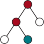
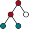
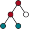
h4 =
h1 = h2 = h3 =
h
Figure 19.24 How the boosting algorithm works. Each shaded rectangle corresponds to
an example; the height of the rectangle corresponds to the weight. The checks and crosses
indicate whether the example was classified correctly by the current hypothesis. The size of
the decision tree indicates the weight of that hypothesis in the final ensemble.This finding, which is quite robust across data sets and hypothesis spaces, came as quite
a surprise when it was first noticed. Ockham’s razor tells us not to make hypotheses more
complex than necessary, but the graph tells us that the predictions improve as the ensemble
hypothesis gets more complex! Various explanations have been proposed for this. One view
is that boosting approximates Bayesian learning (see Chapter 21), which can be shown to
be an optimal learning algorithm, and the approximation improves as more hypotheses are
added. Another possible explanation is that the addition of further hypotheses enables the
ensemble to be more confident in its distinction between positive and negative examples,
which helps it when it comes to classifying new examples.Gradient boosting
For regression and classification of factored tabular data, gradient boosting, sometimes Gradient boosting
called gradient boosting machines (GBM) or gradient boosted regression trees (GBRT), has
become a very popular method. As the name implies, gradient boosting is a form of boosting
using gradient descent. Recall that in ADABOOST, we start with one hypothesis h1, and boost
it with a sequence of hypotheses that pay special attention to the examples that the previous
ones got wrong. In gradient boosting we also add new boosting hypotheses, which pay atten-
tion not to specific examples, but to the gradient between the right answers and the answers
given by the previous hypotheses.As in the other algorithms that used gradient descent, we start with a differentiable loss
function; we might use squared error for regression, or logarithmic loss for classification. As
in ADABOOST, we then build a decision tree. In Section 19.6.2, we used gradient descent to
minimize the parameters of a model—we calculate the loss, and update the parameters in the
direction of less loss. With gradient boosting, we are not updating parameters of the existing720 Chapter 19 Learning from Examples
function ADABOOST(examples, L, K) returns a hypothesis
inputs: examples, set of N labeled examples (x1, y1), . . . , (xN, yN)
L, a learning algorithmK, the number of hypotheses in the ensemble
local variables: w, a vector of N example weights, initially all 1/N
h, a vector of K hypotheses
z, a vector of K hypothesis weights
←
ϵ a small positive number, used to avoid division by zero
for k = 1 to K do
←
h[k] L(examples, w)
←
error 0
for j = 1 to N do // Compute the total error for h[k]
/ ←
if h[k](xj) = y j then error error + w[ j]
if error > 1/2 then break from loop
← —
error min(error, 1 ϵ)
for j = 1 to N do // Give more weight to the examples h[k] got wrong
if h[k](xj) = y j then w[ j] ← w[ j] · error/(1 — error)
w ← Normalize(w)
2
← —
z[k] 1 log((1 error)/error) // Give more weight to accurate h[k]
return Function(x) : ∑ zi hi(x)Figure 19.25 The ADABOOST variant of the boosting method for ensemble learning. The
algorithm generates hypotheses by successively reweighting the training examples. The func-
tion WEIGHTED-MAJORITY generates a hypothesis that returns the output value with the
highest vote from the hypotheses in h, with votes weighted by z. For regression problems, orfor binary classification with two classes -1 and 1, this is ∑k h[k]z[k].
model, we are updating the parameters of the next tree—but we must do that in a way that
reduces the loss by moving in the right direction along the gradient.As in the models we saw in Section 19.4.3, regularization can help prevent overfitting.
That can come in the form of limiting the number of trees or their size (in terms of their depth
or number of nodes). It can come from the learning rate, α, which says how far to move along
the direction of the gradient; values in the range 0.1 to 0.3 are common, and the smaller the
learning rate, the more trees we will need in the ensemble.Gradient boosting is implemented in the popular XGBOOST (eXtreme Gradient Boost-
ing) package, which is routinely used for both large-scale applications in industry (for prob-
lems with billions of examples), and by the winners of data science competitions (in 2015, it
was used by every team in the top 10 of the KDDCup). XGBOOST does gradient boosting
with pruning and regularization, and takes care to be efficient, carefully organizing memory
to avoid cache misses, and allowing for parallel computation on multiple machines.Online learning
So far, everything we have done in this chapter has relied on the assumption that the data are
i.i.d. (independent and identically distributed). On the one hand, that is a sensible assumption:
if the future bears no resemblance to the past, then how can we predict anything? On the otherSection 19.8 Ensemble Learning 721
Proportion correct on test set
1
0.9
0.8
0.7
0.6
0.5
Boosted decision stumps
Decision stump0 20 40 60 80 100
Training set size
1
Training/test accuracy
0.95
0.9
0.85
0.8
0.75
0.7
0.65
0.6
Training accuracy
Test accuracy0 50 100 150 200
Number of hypotheses K
(a) (b)
Figure 19.26 (a) Graph showing the performance of boosted decision stumps with K = 5
versus unboosted decision stumps on the restaurant data. (b) The proportion correct on the
training set and the test set as a function of K, the number of hypotheses in the ensemble.
Notice that the test set accuracy improves slightly even after the training accuracy reaches 1,
i.e., after the ensemble fits the data exactly.hand, it is too strong an assumption: we know that there are correlations between the past and
the future, and in complex scenarios it is unlikely that we will capture all the data that would
make the future independent of the past given the data.In this section we examine what to do when the data are not i.i.d.—when they can change
over time. In this case, it matters when we make a prediction, so we will adopt the perspectivecalled online learning: an agent receives an input x j from nature, predicts the corresponding Online learning
y j, and then is told the correct answer. Then the process repeats with x j+1, and so on. One
might think this task is hopeless—if nature is adversarial, all the predictions may be wrong.
It turns out that there are some guarantees we can make.Let us consider the situation where our input consists of predictions from a panel of
experts. For example, each day K pundits predict whether the stock market will go up or
down, and our task is to pool those predictions and make our own. One way to do this isto keep track of how well each expert performs, and choose to believe them in proportion to
their past performance. This is called the randomized weighted majority algorithm. We
can describe it more formally:{ }
Initialize a set of weights w1, . . . , wK all to 1.
for each problem to be solved do
Receive the predictions {yˆ1, . . . , yˆK} from the experts.
Randomly choose an expert k∗ in proportion to its weight: P(k) = wk.
yield yˆk∗ as the answer to this problem.
Receive the correct answer y.
For each expert k such that yˆk /= y, update wk ←βwk
Normalize the weights so that ∑k wk = 1.
Here β is a number, 0 < β < 1, that tells how much to penalize an expert for each mistake.
Randomized
weighted majority
algorithm722 Chapter 19 Learning from Examples
Regret
No-regret learning
We measure the success of this algorithm in terms of regret, which is defined as the
number of additional mistakes we make compared to the expert who, in hindsight, had the
best prediction record. Let M∗ be the number of mistakes made by the best expert. Then the
number of mistakes, M, made by the random weighted majority algorithm, is bounded by16M < M∗ ln(1/β) + ln K .
1 — β
This bound holds for any sequence of examples, even ones chosen by adversaries trying to
do their worst. To be specific, when there are K = 10 experts, if we choose β = 1/2 then our
number of mistakes is bounded by 1.39M∗ + 4.6, and if β = 3/4 by 1.15M∗ + 9.2. In general,
if β is close to 1 then we are responsive to change over the long run; if the best expert changes,
we will pick up on it before too long. However, we pay a penalty at the beginning, when we
start with all experts trusted equally; we may accept the advice of the bad experts for too
long. When β is closer to 0, these two factors are reversed. Note that we can choose β so that
M gets asymptotically close to M∗ in the long run; this is called no-regret learning (because
the average amount of regret per trial tends to 0 as the number of trials increases).Online learning is helpful when the data may be changing rapidly over time. It is also
useful for applications that involve a large collection of data that is constantly growing, even
if changes are gradual. For example, with a data set of millions of Web images, you wouldn’t
want to retrain from scratch every time a single new image is added. It would be more
practical to have an online algorithm that allows images to be added incrementally. For most
learning algorithms based on minimizing loss, there is an online version based on minimizing
regret. Many of these online algorithms come with guaranteed bounds on regret.It may seem surprising that there are such tight bounds on how well we can do compared
to a panel of experts. What is even more surprising is that when such panels convene to
prognosticate about political contests or sporting events, the viewing public is so willing to
listen to their predictions and so uninterested in knowing their error rates.
Developing Machine Learning Systems
In this chapter we have concentrated on explaining the theory of machine learning. The
practice of using machine learning to solve practical problems is a separate discipline. Over
the last 50 years, the software industry has evolved a software development methodology that
makes it more likely that a (traditional) software project will be a success. But we are still
in the early stages of defining a methodology for machine learning projects; the tools and
techniques are not as well-developed. Here is a breakdown of typical steps in the process.Problem formulation
The first step is to figure out what problem you want to solve. There are two parts to this.
First ask, “what problem do I want to solve for my users?” An answer such as “make it easier
for users to organize and access their photos” is too vague; “help a user find all photos that
match a specific term, such as Paris” is better. Then ask, “what part(s) of the problem can be
solved by machine learning?” perhaps settling on “learn a function that maps a photo to a set
of labels; then, when given a label as a query, retrieve all photos with that label.”16 Blum (1996) gives an elegant proof.
Section 19.9 Developing Machine Learning Systems 723
To make this concrete, you need to specify a loss function for your machine learning
component, perhaps measuring the system’s accuracy at predicting a correct label. This ob-
jective should be correlated with your true goals, but usually will be distinct—the true goal
might be to maximize the number of users you gain and keep on your system, and the revenue
that they produce. Those are metrics you should track, but not necessarily ones that you can
directly build a machine learning model for.When you have decomposed your problem into parts, you may find that there are multiple
components that can be handled by old-fashioned software engineering, not machine learning.
For example, for a user who asks for “best photos,” you could implement a simple procedure
that sorts photos by the number of likes and views. Once you have developed your overall
system to the point where it is viable, you can then go back and optimize, replacing the simple
components with more sophisticated machine learning models.Part of problem formulation is deciding whether you are dealing with supervised, unsu-
pervised, or reinforcement learning. The distinctions are not always so crisp. In semisuper-learning
vised learning we are given a few labeled examples and use them to mine more information Semisupervised
from a large collection of unlabeled examples. This has become a common approach, with
companies emerging whose missions are to quickly label some examples, in order to help
machine learning systems make better use of the remaining unlabeled examples.Sometimes you have a choice of which approach to use. Consider a system to recommend
songs or movies to customers. We could approach this as a supervised learning problem,
where the inputs include a representation of the customer and the labeled output is whether
or not they liked the recommendation, or we could approach it as a reinforcement learning
problem, where the system makes a series of recommendation actions, and occasionally gets
a reward from the customer for making a good suggestion.The labels themselves may not be the oracular truths that we hope for. Imagine that you
are trying to build a system to guess a person’s age from a photo. You gather some labeled
examples by having people upload photos and state their age. That’s supervised learning. But
in reality some of the people lied about their age. It’s not just that there is random noise in the
data; rather the inaccuracies are systematic, and to uncover them is an unsupervised learning
problem involving images, self-reported ages, and true (unknown) ages. Thus, both noise and
lack of labels create a continuum between supervised and unsupervised learning. The fieldlearning
of weakly supervised learning focuses on using labels that are noisy, imprecise, or supplied Weakly supervised
by non-experts.
Data collection, assessment, and management
Every machine learning project needs data; in the case of our photo identification project there
are freely available image data sets, such as ImageNet, which has over 14 million photos with ImageNet
about 20,000 different labels. Sometimes we may have to manufacture our own data, which
can be done by our own labor, or by crowdsourcing to paid workers or unpaid volunteers
operating over an Internet service. Sometimes data come from your users. For example, the
Waze navigation service encourages users to upload data about traffic jams, and uses that to
provide up-to-date navigation directions for all users. Transfer learning (see Section 22.7.2)
can be used when you don’t have enough of your own data: start with a publicly available
general-purpose data set (or a model that has been pretrained on this data), and then add
specific data from your users and retrain.724 Chapter 19 Learning from Examples
Data provenance
If you deploy a system to users, your users will provide feedback—perhaps by clicking
on one item and ignoring the others. You will need a strategy for dealing with this data.
That involves a review with privacy experts (see Section 28.3.2) to make sure that you get
the proper permission for the data you collect, and that you have processes for insuring the
integrity of the user’s data, and that they understand what you will do with it. You also need
to ensure that your processes are fair and unbiased (see Section 28.3.3). If there is data that
you feel is too sensitive to collect but that would be useful for a machine learning model,
consider a federated learning approach where the data stays on the user’s device, but model
parameters are shared in a way that does not reveal private data.It is good practice to maintain data provenance for all your data. For each column in
your data set, you should know the exact definition, where the data come from, what the
possible values are, and who has worked on it. Were there periods of time in which a data
feed was interrupted? Did the definition of some data source evolve over time? You’ll need
to know this if you want to compare results across time periods.This is particularly true if you are relying on data that are produced by someone else—
their needs and yours might diverge, and they might end up changing the way the data are
produced, or might stop updating it all together. You need to monitor your data feeds to catch
this. Having a reliable, flexible, secure, data-handling pipeline is more critical to success than
the exact details of the machine learning algorithm. Provenance is also important for legal
reasons, such as compliance with privacy law.For any task there will be questions about the data: Is this the right data for my task?
Does it capture enough of the right inputs to give us a chance of learning a model? Does it
contain the outputs I want to predict? If not, can I build an unsupervised model? Or can I
label a portion of the data and then do semisupervised learning? Is it relevant data? It is great
to have 14 million photos, but if all your users are specialists interested in a specific topic,
then a general database won’t help—you’ll need to collect photos on the specific topic. How
much training data is enough? (Do I need to collect more data? Can I discard some data to
make computation faster?) The best way to answer this is to reason by analogy to a similar
project with known training set size.Once you get started you can draw a learning curve (see Figure 19.7) to see if more data
will help, or if learning has already plateaued. There are endless ad hoc, unjustified rules of
thumb for the number of training examples you’ll need: millions for hard problems; thou-
sands for average problems; hundreds or thousands for each class in a classification problem;
10 times more examples than parameters of the model; 10 times more examples than input
features; O(d log d) examples for d input features; more examples for nonlinear models than
for linear models; more examples if greater accuracy is required; fewer examples if you use
regularization; enough examples to achieve the statistical power necessary to reject the null
hypothesis in classification. All these rules come with caveats—as does the sensible rule that
suggests trying what has worked in the past for similar problems.You should think defensively about your data. Could there be data entry errors? What can
be done with missing data fields? If you collect data from your customers (or other people)
could some of the people be adversaries out to game the system? Are there spelling errors
or inconsistent terminology in text data? (For example, do “Apple,” “AAPL,” and “Apple
Inc.” all refer to the same company?) You will need a process to catch and correct all these
potential sources of data error.Section 19.9 Developing Machine Learning Systems 725
When data are limited, data augmentation can help. For example, with a data set of Data augmentation
images, you can create multiple versions of each image by rotating, translating, cropping, or
scaling each image, or by changing the brightness or color balance or adding noise. As long
as these are small changes, the image label should remain the same, and a model trained on
such augmented data will be more robust.Sometimes data are plentiful but are classified into unbalanced classes. For example, Unbalanced classes
a training set of credit card transactions might consist of 10,000,000 valid transactions and
1,000 fraudulent ones. A classifier that says “valid” regardless of the input will achieve
99.99% accuracy on this data set. To go beyond that, a classifier will have to pay moreattention to the fraudulent examples. To help it do that, you can undersample the majority Undersampling
class (i.e., ignore some of the “valid” class examples) or over-sample the minority class (i.e., Over-sample
duplicate some of the “fraudulent” class examples). You can use a weighted loss functionthat gives a larger penalty to missing a fraudulent case.
Boosting can also help you focus on the minority class. If you are using an ensemble
method, you can change the rules by which the ensemble votes and give “fraudulent” as the
response even if only a minority of the ensemble votes for “fraudulent.” You can help balance
unbalanced classes by generating synthetic data with techniques such as SMOTE (Chawla
et al., 2002) or ADASYN (He et al., 2008).You should carefully consider outliers in your data. An outlier is a data point that is Outlier
far from other points. For example, in the restaurant problem, if price were a numeric value
rather than a categorical one, and if one example had a price of $316 while all the others
were $30 or less, that example would be an outlier. Methods such as linear regression are
susceptible to outliers because they must form a single global linear model that takes all
inputs into account—they can’t treat the outlier differently from other example points, and
thus a single outlier can have a large effect on all the parameters of the model.With attributes like price that are positive numbers, we can diminish the effect of outliers
by transforming the data, taking the logarithm of each value, so $20, $25, and $316 become
1.3, 1.4, and 2.5. This makes sense from a practical point of view because the high value now
has less influence on the model, and from a theoretical point of view because, as we saw in
Section 15.3.2, the utility of money is logarithmic.≤
Methods such as decision trees that are built from multiple local models can treat outliers
individually: it doesn’t matter if the biggest value is $300 or $31; either way it can be treated
in its own local node after a test of the form cost 30. That makes decision trees (and thus
random forests and gradient boosting) more robust to outliers.Feature engineering
≥
After correcting overt errors, you may also want to preprocess your data to make it easier to
digest. We have already seen the process of quantization: forcing a continuous valued input,
such as the wait time, into fixed bins (0–10 minutes, 10–30, 30–60, or >60). Domain knowl-
edge can tell you what thresholds are important, such as comparing age 18 when studying
voting patterns. We also saw (page 706) that nearest-neighbor algorithms perform better
when data are normalized to have a standard deviation of 1. With categorical attributes such
as sunny/cloudy/rainy, it is often helpful to transform the data into three separate Booleanattributes, exactly one of which is true (we call this a one-hot encoding). This is particularly One-hot encoding
useful when the machine learning model is a neural network.
726 Chapter 19 Learning from Examples
You can also introduce new attributes based on your domain knowledge. For example,
given a data set of customer purchases where each entry has a date attribute, you might want
to augment the data with new attributes saying whether the date is a weekend or holiday.As another example, consider the task of estimating the true value of houses that are for
sale. In Figure 19.13 we showed a toy version of this problem, doing linear regression of
house size to asking price. But we really want to estimate the selling price of a house, not
the asking price. To solve this task we’ll need data on actual sales. But that doesn’t mean we
should throw away the data about asking price—we can use it as one of the input features.
Besides the size of the house, we’ll need more information: the number of rooms, bedrooms,
and bathrooms; whether the kitchen and bathrooms have been recently remodeled; the age of
the house and perhaps its state of repair; whether it has central heating and air conditioning;
the size of the yard and the state of the landscaping.We’ll also need information about the lot and the neighborhood. But how do we define
neighborhood? By zip code? What if a zip code straddles a desirable and an undesirable
neighborhood? What about the school district? Should the name of the school district be
a feature, or the average test scores? The ability to do a good job of feature engineering
is critical to success. As Pedro Domingos (2012) says, “At the end of the day, some ma-
chine learning projects succeed and some fail. What makes the difference? Easily the most
important factor is the features used.”Exploratory data analysis and visualization
John Tukey (1977) coined the term exploratory data analysis (EDA) for the process of
exploring data in order to gain an understanding of it, not to make predictions or test hy-
potheses. This is done mostly with visualizations, but also with summary statistics. Looking
at a few histograms or scatter plots can often help determine if data are missing or erroneous;
whether your data are normally distributed or heavy-tailed; and what learning model might
be appropriate.It can be helpful to cluster your data and then visualize a prototype data point at the
center of each cluster. For example, in the data set of images, I can identify that here is a
cluster of cat faces; nearby is a cluster of sleeping cats; other clusters depict other objects.
Expect to iterate several times between visualizing and modeling—to create clusters you need
a distance function to tell you which items are near each other, but to choose a good distance
function you need some feel for the data.It is also helpful to detect outliers that are far from the prototypes; these can be considered
critics of the prototype model, and can give you a feel for what type of errors your system
might make. An example would be a cat wearing a lion costume.Our computer display devices (screens or paper) are two-dimensional, which means that
it is easy to visualize two-dimensional data. And our eyes are experienced at understanding
three-dimensional data that has been projected down to two dimensions. But many data sets
have dozens or even millions of dimensions. In order to visualize them we can do dimension-
ality reduction, projecting the data down to a map in two dimensions (or sometimes to three
dimensions, which can then be explored interactively).1717 Geoffrey Hinton provides the helpful advice “To deal with a 14-dimensional space, visualize a 3D space and
say ‘fourteen’ to yourself very loudly.”Section 19.9 Developing Machine Learning Systems 727
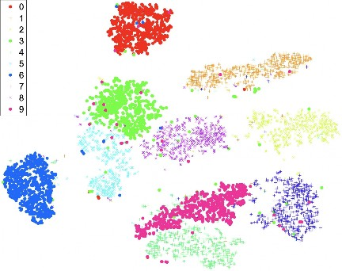
×
Figure 19.27 A two-dimensional t-SNE map of the MNIST data set, a collection of 60,000
images of handwritten digits, each 28 28 pixels and thus 784 dimensions. You can clearly
see clusters for the ten digits, with a few confusions in each cluster; for example the top
cluster is for the digit 0, but within the bounds of the cluster are a few data points representing
the digits 3 and 6. The t-SNE algorithm finds a representation that accentuates the differences
between clusters.The map can’t maintain all relationships between data points, but should have the prop-
erty that similar points in the original data set are close together in the map. A technique
called t-distributed stochastic neighbor embedding (t-SNE) does just that. Figure 19.27
shows a t-SNE map of the MNIST digit recognition data set. Data analysis and visualization
packages such as Pandas, Bokeh, and Tableau can make it easier to work with your data.Model selection and training
With cleaned data in hand and an intuitive feel for it, it is time to build a model. That means
choosing a model class (random forests? deep neural networks? an ensemble?), training
your model with the training data, tuning any hyperparameters of the class (number of trees?
number of layers?) with the validation data, debugging the process, and finally evaluating the
model on the test data.There is no guaranteed way to pick the best model class, but there are some rough guide-
lines. Random forests are good when there are a lot of categorical features and you believe
that many of them may be irrelevant. Nonparametric methods are good when you have a lot
of data and no prior knowledge, and when you don’t want to worry too much about choosing
just the right features (as long as there are fewer than 20 or so). However, nonparametric
methods usually give you a function h that is more expensive to run.T-distributed
stochastic neighbor
embedding (t-SNE)728 Chapter 19 Learning from Examples
False positive
Receiver operating
characteristic (ROC)Logistic regression does well when the data are linearly separable, or can be converted
to be so with clever feature engineering. Support vector machines are a good method to try
when the data set is not too large; they perform similarly to logistic regression on separable
data and can be better for high-dimensional data. Problems dealing with pattern recognition,
such as image or speech processing, are most often approached with deep neural networks
(see Chapter 22).Choosing hyperparameters can be done with a combination of experience—do what
worked well in similar past problems—and search: run experiments with multiple possi-
ble values for hyperparameters. As you run more experiments you will get ideas for different
models to try. However, if you measure performance on the validation data, get a new idea,
and run more experiments, then you run the risk of overfitting on the validation data. If you
have enough data, you may want to have several separate validation data sets to avoid this
problem. This is especially true if you inspect the validation data by eye, rather than just run
evaluations on it.Suppose you are building a classifier—for example a system to classify spam email. La-
beling a legitimate piece of mail as spam is called a false positive. There will be a tradeoff
between false positives and false negatives (labeling a piece of spam as legitimate); if you
want to keep more legitimate mail out of the spam folder, you will necessarily end up sending
more spam to the inbox. But what is the best way to make the tradeoff? You can try different
values of hyperparameters and get different rates for the two types of errors—different points
on this tradeoff. A chart called the receiver operating characteristic (ROC) curve plotscurve false positives versus true positives for each value of the hyperparameter, helping you visu-
alize values that would be good choices for the tradeoff. A metric called the “area under theAUC
Confusion matrix
ROC curve” or AUC provides a single-number summary of the ROC curve, which is useful
if you want to deploy a system and let each user choose their tradeoff point.Another helpful visualization tool for classification problems is a confusion matrix: a
two-dimensional table of counts of how often each category is classified or misclassified as
each other category.There can be tradeoffs in factors other than the loss function. If you can train a stock
market prediction model that makes you $10 on every trade, that’s great—but not if it costs
you $20 in computation cost for each prediction. A machine translation program that runs
on your phone and allows you to read signs in a foreign city is helpful—but not if it runs
down the battery after an hour of use. Keep track of all the factors that lead to acceptance or
rejection of your system, and design a process where you can quickly iterate the process of
getting a new idea, running an experiment, and evaluating the results of the experiment to see
if you have made progress. Making this iteration process fast is one of the most important
factors for success in machine learning.Trust, interpretability, and explainability
We have described a machine learning methodology where you develop your model with
training data, choose hyperparameters with validation data, and get a final metric with test
data. Doing well on that metric is a necessary but not sufficient condition for you to trustyour model. And it is not just you—other stakeholders including regulators, lawmakers, the
press, and your users are also interested in the trustworthiness of your system (as well as in
related attributes such as reliability, accountability, and safety).Section 19.9 Developing Machine Learning Systems 729
A machine learning system is still a piece of software, and you can build trust with all the
typical tools for verifying and validating any software system:Source control: Systems for version control, build, and bug/issue tracking.
•
Testing: Unit tests for all the components covering simple canonical cases as well
as tricky adversarial cases, fuzz tests (where random inputs are generated), regression
tests, load tests, and system integration tests: these are all important for any software
system. For machine learning, we also have tests on the training, validation, and test
data sets.•
Review: Code walk-throughs and reviews, privacy reviews, fairness reviews (see Sec-
tion 28.3.3), and other legal compliance reviews.•
Monitoring: Dashboards and alerts to make sure that the system is up and running and
is continuing to performing at a high level of accuracy.•
Accountability: What happens when the system is wrong? What is the process for
complaining about or appealing the system’s decision? How can we track who was
responsible for the error? Society expects (but doesn’t always get) accountability for
important decisions made by banks, politicians, and the law, and they should expect
accountability from software systems including machine learning systems.In addition, there are some factors that are especially important for machine learning systems,
as we shall detail below.Interpretability: We say that a machine learning model is interpretable if you can in- Interpretability
spect the actual model and understand why it got a particular answer for a given input, and
how the answer would change when the input changes.18 Decision tree models are consid-
ered to be highly interpretable; we can understand that following the path Patrons = Full and
WaitEstimate = 0–10 in a decision tree leads to a decision to wait. A decision tree is inter-
pretable for two reasons. First, we humans have experience in understanding IF/THEN rules.
(In contrast, it is very difficult for humans to get an intuitive understanding of the result of a
matrix multiply followed by an activation function, as is done in some neural network mod-
els.) Second, the decision tree was in a sense constructed to be interpretable—the root of the
tree was chosen to be the attribute with the highest information gain.Linear regression models are also considered to be interpretable; we can examine a model
for predicting the rent on an apartment and see that for each bedroom added, the rent increases
by $500, according to the model. This idea of “If I change x, how will the output change?” is
at the core of interpretability. Of course, correlation is not causation, so interpretable models
are answering what is the case, but not necessarily why it is the case.Explainability: An explainable model is one that can help you understand “why was this Explainability
output produced for this input?” In our terminology, interpretability derives from inspecting
the actual model, whereas explainability can be provided by a separate process. That is, the
model itself can be a hard-to-understand black box, but an explanation module can summarize
what the model does. For a neural network image-recognition system that classifies a picture
as dog, if we tried to interpret the model directly, the best we could come away with would be
something like “after processing the convolutional layers, the activation for the dog output in
the softmax layer was higher than any other class.” That’s not a very compelling argument.18 This terminology is not universally accepted; some authors use “interpretable” and “explainable” as synonyms,
both referring to reaching some kind of understanding of a model.730 Chapter 19 Learning from Examples
Long tail
Monitoring
Nonstationarity
But a separate explanation module might be able to examine the neural network model and
come up with the explanation “it has four legs, fur, a tail, floppy ears, and a long snout; it
is smaller than a wolf, and it is lying on a dog bed, so I think it is a dog.” Explanations
are one way to build trust, and some regulations such as the European GDPR (General Data
Protection Regulation) require systems to provide explanations.As an example of a separate explanation module, the local interpretable model-agnostic
explanations (LIME) system works like this: no matter what model class you use, LIME
builds an interpretable model—often a decision tree or linear model—that is an approxima-
tion of your model, and then interprets the linear model to create explanations that say how
important each feature is. LIME accomplishes this by treating the machine-learned model as
a black box, and probing it with different random input values to create a data set from which
the interpretable model can be built. This approach is appropriate for structured data, but not
for things like images, where each pixel is a feature, and no one pixel is “important” by itself.
Sometimes we choose a model class because of its explainability—we might choose
decision trees over neural networks not because they have higher accuracy but because theexplainability gives us more trust in them.
However, a simple explanation can lead to a false sense of security. After all, we typically
choose to use a machine learning model (rather than a hand-written traditional program)
because the problem we are trying to solve is inherently complex, and we don’t know how to
write a traditional program. In that case, we shouldn’t expect that there will necessarily be a
simple explanation for every prediction.If you are building a machine learning model primarily for the purpose of understanding
the domain, then interpretability and explainability will help you arrive at that understanding.
But if you just want the best-performing piece of software then testing may give you more
confidence and trust than explanations. Which would you trust: an experimental aircraft that
has never flown before but has a detailed explanation of why it is safe, or an aircraft that
safely completed 100 previous flights and has been carefully maintained, but comes with no
guaranted explanation?Operation, monitoring, and maintenance